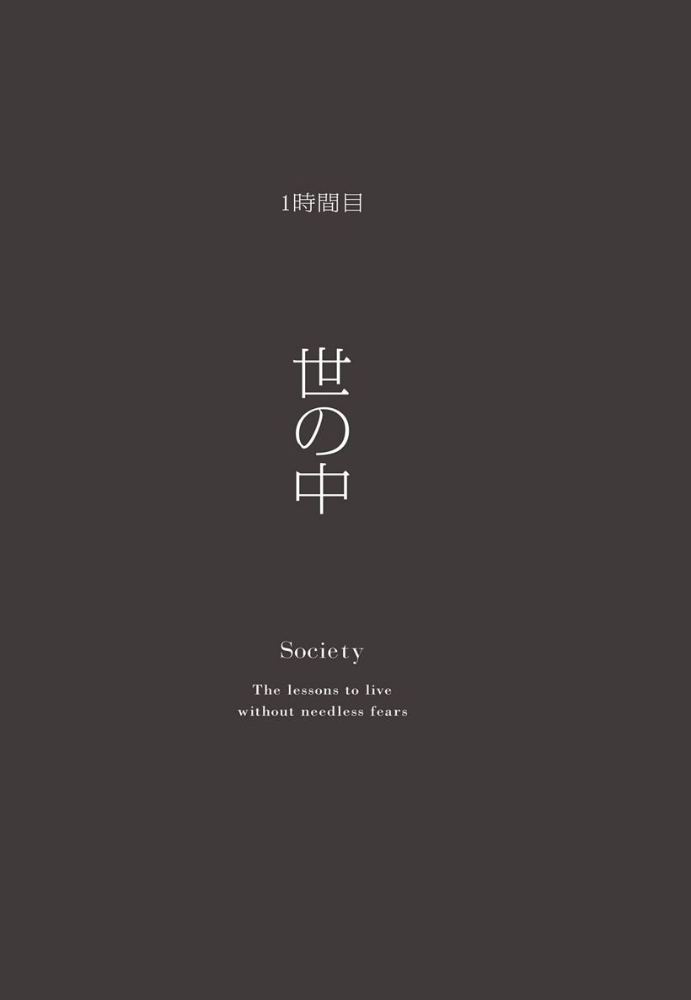

| ぜんぜん気にしない技術 | |
| 家入 一真 & 森田 正康 | |
| (2013) | |
朝の会 気にしすぎてたら人生もったいない
この本のタイトルは『ぜんぜん気にしない技術』だけど、これは「傍若無人な人になれ！」ということじゃない。だって、本当に何も気にしてない人はただの愚か者だと思うから。
だけど、僕たちから見たら、「気にしすぎだよ」って思うくらい、どうしても何かを気にしてしまう人がいる。
誰かに相談してみたものの「そんなこと気にする必要ないよ」と返されて、「でも......」と言いたくなる気持ちもわかる。でも、相談に乗ってくれた人の言うとおりだと思う。だいたいは気にしなくてもいいようなことだったりする。
きっと自分でも気にしすぎとはわかっているけど、どうしても割切って考えることができない。
「怒られたくない」「嫌われたくない」「恥ずかしい思いはしたくない」など、他人からどう思われているかが気になって、結局、「周囲に合わせてしまう」「言いたいことがあっても黙っている」「自分をよく見せようとしてしまう」というような、自分のことより周り優先の行動をとってしまう。
だけど、自分より周りを優先させるなんて、もったいないことだと思う。たった一度しかない人生だから、もう少し自分のことを考えてみてもいいと思う。
あたりまえだけど、僕たちだって気にすることもあれば、気にしないこともある。だけど、他の人から見たら「自由でいいな」「いつも楽しそう」と思われることが多い。
きっと「あなたたちはそういう性格なんでしょ」と思う人もいるかもしれない。
たしかに性格は人それぞれ違う。そして、その性格はこれまで生きてきた環境によって形成されている。家庭環境、学校生活など、１００人いれば１００人のバックグラウンドがある。
では、ここで僕たちがどういう人生を歩んできたか、簡単にだけどまとめてみたから少しだけ見てみてほしい。
森田正康
・家が小金持ち
・12歳で渡米、言葉が通じない生活
・学歴フェチ
・大学教授
12歳で渡米し、言葉が通じない、周りは超金持ちばかりの世界に放り込まれる。ＵＣバークレー、ハーバード大学、ケンブリッジ大学、コロンビア大学へ進み、東京大学在学中に起業。教育事業を運営しながら、大学教授もしている。２００６年にＪＡＳＤＡＱに取締役として上場を経験。
家入一真
・家が貧乏
・最終学歴は中卒
・いじめに遭い、ひきこもる
・遅刻、ドタキャン常習犯
貧乏だったけど、あたたかい家庭に育つ。いじめが原因で高校を中退し、新聞配達をしていたことも。ロリポップ！というレンタルサーバーを立ち上げ、２００８年に当時最年少でＪＡＳＤＡＱ上場して10数億を得るも２年で使い果たす。アップダウンの激しい人生を送ってきている。
僕たち、今は二人とも起業家として会社を経営するという点では共通しているけど、そこに至るまでの経緯はまったく違う。対極にいると言っていいくらい接点がない。
こん、これまで生きてきたなかで「ぜんぜん気にしない技術」が磨かれたのは間違いない。
きみが何かを気にしすぎてしまうのは「性格だから仕方がない」とか、何か強い「思い込み」が原因なのかもしれない。そんなさまざまな思い込みを、僕たちの経験とか、変わってきた価値観を伝えることで少しでも取り払えたらと思う。
最後に、この本の構成について少しだけ説明しておくと、今読んでもらっているのは「朝の会」。この本は一日の授業に見立てて構成されている。本文中では家入一馬はひらがなで「ぼく」、森田正康はカタカナで「ボク」としている。
きみが一日の授業を終えたあと、世界が少しでも違って見えたら、これ以上うれしいことはない。どうぞ楽しんでください。
もくじ
気にしすぎてたら人生もったいない
世の中
「夢も希望もありません」
「批判がされたのが気になって眠れません......」
「世の中は冷たいと思います。もっと親切にならないですか？」
「『最近の若者は』ってバカにされます」
「がんばっている人が報われないのはおかしいと思います」
「今後の政治が不安です...」
「マナー違反、困っている人を見て見ぬふりして後で後悔します」
自分
「要領のいい人間に憧れますがなれません」
「あれもこれもやりたいけど時間が足りません」
「優柔不断で他人の意見に流されてばかりです」
「面白いことが言えなくて、つまらない人と思われてそう」
「暇だと落ち着きません」
「イヤなことがあるとついついイライラしちゃいます」
人間関係
「『気が利かない』ってよく言われますがダメですか？」
「飲み会には行かなくてもいいですか？」
「人に謝るのが苦手です」
「怒られると、すぐに心を閉ざしてしまいます」
「『私と仕事どっちなの』と言われて困っています」
「いつも周りの目を気にしてしまいます」
「嫌われるんじゃないかと不安です」
「twitterやfacebookでつぶやいても反応がありません」
「初対面の人となかなか仲良くなれません」
仕事
「やっぱり大企業で働きたいです」
「仕事にやりがいが見つけられません」
「仕事ができないダメな上司に腹が立ちます」
「プロジェクトのリーダーに抜擢されたけど不安です」
「自由って、なんですか？ 私も自由になりたい」
「いざというとき頼れる人脈がありません」
「英語をしゃべれないけど、このままで大丈夫かな？」
「完璧にしたくて一つの仕事に時間をかけすぎてしまいます」
コンプレックス
理想と現実
「才能がないので人生あきらめています」
「会社を辞めるか辞めないか迷っています」
「世の中の役に立つ仕事をしたいです。どうしたらいいですか？」
「失敗したくない、失敗したくない、失敗したくない」
「今の会社でやりたいことができないので転職を考えています」
お金
「お金を持っている人は勝ち組ですよね」
「貯金してないです、ヤバいですか？」
「ラクして稼いでいる人がうらやましいです」
「ついついお金を使っちゃいます」
「給料が上がりません。もっと稼ぎたいです」
「他人の年収が気になります」
「おごったり、おごられたりする関係に疲れました」
考えるのはきみ自身

夢も希望もただの荷物
「夢も希望もありません」
「やりたいことなんてない」という人がいる。本人はそのせいで困っていると思っているかもしれない。たしかに何もないよりはあったほうがいい。そのほうが安心できるから。
でも夢や希望をもったところで、それらはきみの人生を保証してくれるのだろうか。果たして、きみの人生を成功へと導いてくれるのだろうか。
もちろん、何もしてはくれない。
だって夢も希望も目的でしかない。人生を確かなものへと導くのは、夢でも希望でもなく自分自身。誤解を恐れずにいえば、夢も希望もただの荷物でしかないとぼく（家入）は思っている。
たとえば、サッカー選手になりたくて小学校の卒業文集に「ワールドカップ優勝」なんて書いちゃったりして、中学高校は勉強もろくにしないでサッカー三昧。
一見、夢に向かって一生懸命がんばっているようにも思えるけど、その反面、自分で自分の首を締めてしまっている。「サッカー選手になる」という夢を抱いた瞬間、他の選択肢を切り捨てたことになるからだ。勉強してみたら専門家になれるくらい頭がよかったかもしれないし、料理してみたらお店を開けるくらい上手くなったかもしれない。
夢も希望も曖昧で頼りない存在。生きる糧になることもあるけど、足をひっぱることもあるから気をつけたほうがいいと思う。
かくいうぼくも、夢がなかったわけではない。小さいときは、画家や中国の歴史学者になりたいと思っていた。でもそれは興味や憧れに近い感覚で、固執するようなことはなかった。案の定、時間が経つにつれぼくは、プログラミングの世界に魅了されていく。
ボク（森田）も小さい頃は、首相になりたいと思っていた。理由は単純で、首相になればどんな悪も退治できると思ったからだ。バイクに乗ったヒーローが悪を懲らしめ、三分しか活躍できないヒーローが怪獣から地球を救う、その姿に純粋に憧れて、世界を救うヒーローは首相しかいないと思っていた。自分のことながら単細胞だと思う。そしてその夢を、十数年後には捨てることになる。
アメリカの一流大学で政治を学んでいたボクは、秀才たちを目の当たりにする。俗にいう「上には上がいる」って感覚を、肌で感じる羽目になった。同時に「ここには、こんなにすごい人たちがたくさんいるのに、世界は変わらない」という現実を思い知らされて、首相になるという夢に違和感を覚えた。首相になっても世界は変えられない。もっと根本的なところから変えないと、世界は変わってくれないという思いが芽生えた。
どうしたらいいのか悩んだ挙げ句たどり着いたのが、「教育」だった。「教育」を変えたら世界が変わるかもしれないという可能性に、挑戦してみるだけの価値があるような気がして、「教育」の世界に飛び込んだ。首相になるという夢を捨てて。
夢をもつことが悪いことだとは思わない。でも夢に執着することは、おすすめできない。
何かをはじめるときに重要なのは、失敗しないための準備でも、最後までやり遂げようとする決意でもなく、逃げる早さだと思う。見切りをつける早さといってもいい。
面白そうだなって思ったらやってみる。気になったら手を出してみる。つまずいてしまったらいったん身を引いて、体勢を立て直した上で再度首を突っ込んでみる。そうやって何かをはじめてみることのほうが、夢を探すことよりも大切だと思う。
一つしか選ばないというのは間違った選択の仕方で、迷ったら両方選べばいいと思っている。会社を経営しながら大学の先生をやっている人に出会ったとき、「経営者」と「教授」という職業が両立できることに驚いた。同時に、選択を迫られたとき、取捨選択しなければいけないと思い込んでしまっている自分に気づいた。その人との出会いがきっかけとなり、ボク自身も起業家と教授の両立を目指し今に至っている。欲張りになることも大事なことである。
小学生のとき、「一流のプロの野球選手になる」という夢を描いたイチロー。「プロ」だけではなく、「一流」というところまでも現実のものとした。彼のような人は、きっと一握りしか存在しない。いわゆる天然記念物だ。イチローをイリオモテヤマネコとして捉えるなら、さしずめきみは三毛猫といったところだろうか。夢も希望もないと嘆くきみに教えられることがあるとすれば、それは「とりあえず、目の前のことをやってみる」ということだと僕たちは考える。
荷物なんか捨てて、目の前のことやってみようよ
きみの耳もロバの耳
「批判されたのが気になって眠れません......」
会社で上司から怒られ、恋人や奥さんからは小言を言われる。ネットでは心ない罵倒を目にする毎日。相手の反応が怖くて沈黙を貫いてし
まったり、上手く言い返せなくて一日中へこんでしまうのはいつものこと。挙げ句の果てには、頭に血が上って余計なことをつい言ってしまって後悔したりと、いつまで経っても批判や怒りに慣れることができない。それは仕方のないことでもある。人類は繁栄するために、「痛み」を敏感に感じ取るようにつくられた。肉体的にも精神的にも「痛み」を感じたとき、その身を守るよう意識させられているのだ。
だけど、人は成長する。僕たちは生きていくなかで、批判を受け流し、有効に活用する方法を身につけたので紹介したい。
まずは、ぼく（家入）から一つ。「自分も怒る」という方法だ。
ぼくもきみと同じで、「痛み」といつも向かい合わせだ。「大人になるにつれ、怒られることが少なくなる」ってよく聞くけど、ぼくは違った。大人になればなるほど、怒られるようになった。
そんなとき「自分も怒る」という方法が有効だ。「批判されたからって、自分も怒ったら泥沼じゃないか」と思うかもしれない。でもこれは言い返したり、仕返しをするという意味ではない。コンプレックスや怒りといったネガティブな感情は、前に進んだり、壁を打ち破ったりするための燃料になり得るという意味。
「万有引力」を発見したことで有名なニュートンも、世界的映画監督の蜷川幸雄も怒りっぽいことで知られている。ピカソの有名な「ゲルニカ」という絵も、戦争への怒りを原動力にして描かれたものだ。
ぼく自身も、ものすごく冴えたアイデアが出るのは、誰かに叩かれて怒りを露わにしているときだったりする。肝心なのは「どこにぶつけるか」ということ。
今の自分に足りないところは何なのか、社会が必要としているものはなんなのか、自分にはどこまでできるのか、徹底的に考える原動力にする。怒りというのは、有効に使えばすばらしいセンスや集中力の源になる頼もしいものなんだ。
ボク（森田）が身につけたのは、「批判よりも広い視点をもつ」という方法。
以前、批判されてある事業から撤退したことがあった。そのとき、ボクは「失敗した」とか「反対の声に負けた」とか思わなかったし、批判の内容でへこむこともなかった。
というのも、言われたことに影響されたわけではなく、「自分が世の中のためにやっていると思っていたことが、世の中からこんなに批判をされるなら止めた方がいいな」という自分の判断で、撤退することを決めたからだ。
大切なのは、批判内容に耳を傾けるのではなく、批判された事実と向き合うこと。なぜ反対意見が来るのかという理由を考えたり、批判者のバックボーンを推測したりと、広い視野をもつことで相手への理解も深まり自分も冷静になれる。反対の声に「勝つ」とか「負ける」といった優劣をつけるのではなく、自分の判断の材料にすることが肝心。
そして、他人に何を言われたとしても、自分の仮説や意見を曲げてはいけない。物事に対して賛否両論あるのは仕方のないこと。
でも、他人の批判によって自分の意見を変えてしまうことは、自分を見失ってしまうことと同義だ。人の意見を一個人が変えさせる権利は誰ももっていないのだから、何かを言われる筋合いもないし、聞き入れる必要もない。
そもそも、「議論」と「ケンカ」を混同せずに使い分けることが必要になってくる。
相手の意見が自分目線の正論であるならば、お互いの意見を理解し合う場を設けることでプラスに働くこともあるかもしれない。
しかし、自分のことを勘違いしている人に対して、わざわざ説明して納得してもらう必要はない。逆に変に自分から手出しすることで、余計相手を怒らせてしまうこともあるので注意したい。
世論は自然現象の一種で、反論者が急に自分の味方にもなることもあれば、その逆も然り。そういう意味では、無駄骨に終わる可能性も高いので真剣に対応する必要はない。ただ、そういう批判的な意見や人が存在したことを、忘れないようにすることは大切だと思う。泣き寝入りはその事実から目を背ける行為だが、ボク自身はちゃんと受け入れて記憶に留めるようにしている。
批判も受け入れることのできる耳
世間はそこまで期待できたものじゃない
「世の中は冷たいと思います。もっと親切にならないですか？」
世の中は冷たくなった。自分の財布が冷えれば、他人の財布の中身が気になる。そして、他人の財布との違いに気づいたとき、うらやましくなってしまうのは人間の性。そして場合によっては、騙し取ろうとする人が出てくる。だから誰かと接することが臆病になってくるのだ。誰だって損はしたくないから。どちらかが勝とうとすれば戦いになって、戦いになればさらに冷え込む。
でも、ぼく（家入）は世間が冷たいとは思わない。いや、「冷たいと思っているから冷たいと感じない」といった方が正しいかもしれない。世間や人に下手に期待するから、その期待に応えてもらえなかったときに、裏切られたような気持ちになって冷たいと感じてしまう。そうしたら最初から、期待しないようにすればいいだけの話。
人と人とがわかり合おうとすることも、自分のことを理解してほしいと相手に求めている行為。だからこそ、わかり合えないとき勝手に絶望してしまう。他人同士は絶対にわかり合えないという前提で、「自分はきみのことをこう思う」と一方的に表明するくらいがちょうどいい。
根本的に人は一人。誰かがどれだけ困っていたとしても、何の利益もなしにいちいち耳を傾けてくれるほどみんな余裕はない。それならいっそのこと、「世の中は冷たいんだ」と腹をくくって、身近な人たちを笑顔にできるようにしていれば、きっときみの周りだけでも温かくなると思う。
ボク（森田）も、世間は温かいと思う。ボク自身は、味方しか見えないタイプで、最初から損をするつもりで人と付き合うスタンスを大切にしている。子犬のようにしっぽ振って近寄るボクを、殴るような人であれば逃げるしかないので、冷たい人とは知らないうちに縁が切れているという感じ。
たしかに長屋社会がなくなり、人との余分なコミュニケーションがどんどん減って、必要最低限のコミュニケーションしか残っていないのが現状。
お礼の気持ちを形として表すことはすごく大切なことなのに、お歳暮・お中元がワイロにあたるとして受け取りを断られるようなこともある世の中になってしまった。送っているこっちの方が傷つく。また、放課後に先生と仲良くしているだけで、〇〇ちゃんはえこひいきされているって噂が勝手に立って、いじめの対象になることもある。
温かいコミュニケーションを取ろうと思えば思うほど、損をする変な世の中になってしまった。だからといって悲観的になることもない。価値観や世論はひっくり返るものだから、そういうコミュニケーションの大切さに改めて気づく日がまた来るかもしれない。
それに、もっと冷たい国をボクは知っている。
日本は自己破産しても８年くらいでなにごともなかったように復活できる国だ。そんな国は世界にあまりない。イヤなグローバルスタンダードだけど、もし返せない借金があるなら、奥さんや娘を売るか内臓を売るか傭兵になるか、いずれも人生ヘビーモードな選択肢しかない。そういう世界に目を向けると、日本は十分温かい国だって思える。
日本では、買い物をするとき言葉をひとことも発しなくても買い物を済ますことができる。でも、アメリカではレジで必ず会話するという話をよく聞くけど、どうしてかわかるかな？
答えは、グローバル化した世界の中でも、日本には文化が一つしか存在していないから。というと言いすぎかもしれないけど、日本語という言葉と生活している人種が圧倒的に日本人が多いことがアメリカとは異なる。アメリカはいろんな国の文化が共存しているので、会話をしないとコミュニケーションが成り立たない。「商品をレジに持っていく」という行為が、「買いたい」という意味なのか、「商品の説明をして欲しい」という意味なのか、文化が違えば確認しないとわかりっこないのである。
グローバル化に合わせて日本は、欧米の自立心という文化を輸入した。
しかし、その輸入は中途半端に終わり、日本は自立心を見失ったまま権利だけ主張する国になってしまった。「こうしてくれ」「ああしてくれ」と赤子のように泣き叫びながら、誰かが手を差し伸べてくれるのを待つばかりなのである。傷つくことを知った上で、自分から動けるかどうかが今後の日本の課題だと思う。
きみから誰かに手を伸ばしたことはある？
それは昔からの永遠のテーマ
「『最近の若者は』ってバカにされます」
「最近の若者は......」というフレーズは、いつの世も聞かされる。平安時代に書かれた枕草子にも、「最近の若者は言葉遣いがなっていない」と書かれていたり、もっと古くは古代ギリシャの哲学者プラトンも最近の若者にもの申しているのは有名な話だ。
数千年前の時代から同じようなことを言われている。きみに小言を言ったおじさんも同じことを言われて育っただろうし、たぶんきっと、きみがおじさんになったときも、同じ台詞を吐いている。
どうしてバカにされるのか。ひとことで言ってしまえば、理解できないから。一人っ子に、兄弟のよさも悪さもわからないのと同じで、育った環境が違えば、価値観も変わる。育った時代が変われば、理解し得ないのは当然の話。致し方ないことだと思う。
でも、そんな残念なおじさんおばさんにはなってほしくない。相手の価値観を受け入れることはできなくても、知ることはできる。その努力を怠るのは、違う世代の人と一緒に生きて行く上でとても不便だ。
僕たちも、「最近の若者は......」というフレーズを聞いて育った。僕たちが社会に出た頃はベンチャー色が強い時代で、次から次へと事業を立ち上げていく人が多かった。そのなかの一人に堀江貴文さんがいた。当時、彼がＴシャツ姿で記者会見に出席したとき、多くの大人たちが一斉にバッシングしたのはまだ記憶に新しい。
結局、「最近の若者」として標的になるのは、その時代の中でやけに目立っている人のことであり、必ずしも大多数でないことがほとんどだ。だから、これから述べる「若者像」も一概には言えないかもしれない。ただ、やっぱり純粋に僕たちが感じる今の若者たちの傾向と背景を見ていきたいと思う。
今の時代の若者は、僕たちの時代に比べると安心感を求め、保守に努める傾向にあると思う。競争することを嫌うため、競争を好む少数派が悪目立ちし、叩かれやすくなっているようにも感じる。
どの時代の若者にもいろんな背景がある。ここ20年くらいの出来事で言えば、神戸の震災、９・11やリーマンショック、３・11といろいろあった。逆にいろいろあり過ぎて、今の時代の若者は〝さとり世代〟なんて呼ばれ方もするくらい、なにごとにも動じなくなっているかもしれない。ショックの耐性がついたという感じだろうか。不況不況と言われ続けてきた時代の中で、お金というものに変わる新しい価値観を見出そうとしている世代。草食と呼ばれるようになった理由がここにあるようにも思う。
経営者向けの講演会にいくと、「最近の子はガツガツしていないから、どうしたらいいでしょうか」と質問される。ぼく（家入）の答えは決まってこうだ。
「あなたがお金以外の価値を提供していないから」
お金に執着していない彼らは、お金ではない他の理由を求めているので、「地域の役に立つ」「こういう人を助ける」と教えることが大切だと思っている。
そもそも、「最近の若者」という表現を使って、顔の見えない話し方をすること自体よくないことだと思う。「最近の若者」と比較して、「自分たちはこういう辛い経験をして、こういう常識の中で生きてきた」というのを再確認するためにその言葉を利用するのであれば、それは相手を怒らせるだけで、何も変わらないし誰も得しない。
逆に、間違ったことをしている若者を叱るときは、「最近の若者」という括りで注意を促すのではなく、きちんとその相手の行為に対して、何がいけないのか明示して注意すべきだと思う。
「ギブアンドギブ」という言葉を、ぼくは大切にしている。
ぼくは、上の人から与えられてきたから今のぼくがあるわけであって、人類の歴史ってそうやってつながってきたはずだし、同じようにしてつなげていかなきゃいけないとも思っている。そのなかで、年上の人たちが若者にしてあげられることって、経験を与えたり生き方を教えたり、機会をたくさんつくってあげたりすることだと思っている。
キミはそのフレーズを口にしない大人になればいい
水の泡となって消えた努力のゆくえ
「がんばっている人が報われないのはおかしいと思います」
世の中、たくさんの人が毎日ガマンして過ごしている。電車で寝ているサラリーマンはみんな疲れ果てた顔だし、グーグルで「仕事」や「毎日」と検索バーに打ち込むと、間髪入れずに超ネガティブな言葉が予測表示される。人によっては飲み会や休日すら憂鬱で、家でも気が休まらなくて、こんなにガマンしているのに報われないなんて、そりゃ「やってられないよ」となるのも至極当然だ。
それでも第一前提として、これだけは確認しておきたい。「ガマン」イコール「努力すること」なんて式は絶対に成り立たない。世の中、価値のない苦労ってそうそうないけど、「少なくとも効果的じゃないよね」というものはたくさんある。
では努力っていったいなにを指すんだろう。辞書には、次のようにある。
「ある目的のために力を尽くして励むこと（デジタル大辞泉）」
ここで一個、ポイントだ。「努力する」にはどうやら、目的が必要らしい。「営業で受注１００件取りたい」とか「運命の人と出会いたい」とか、とにかく目的がないと努力ははじまらない。
目標と設定期限から、一日ずつ逆算して、今日できることをやる。これが努力と呼ぶものだ。それなら、焦点は「自分がどれだけ大変な思いをして一生懸命やっているか」ということより、「計画の正確さ」とか「毎日の目標の達成度合い」のほうが重要になる。
そうはいっても、いろんな人の思惑がある世の中。どれだけ緻密に計画を練って、計画通りに進めていても、報われないことは少なくない。僕たちも「いける！」と思ったアイデアが「あーあ......」という結果になってしまうことがある。
でも「報われる」ってことは形がないものだ。いつ、どんな形で返ってくるかわからない。
ぼく（家入）は今ＩＴの仕事をしているけど、パソコンとの出会いは少年時代、三国志のゲームがきっかけだった。当時のパソコンなんて本当にチープなもので、よく止まったり変な音を立てたりしていた。ゲームに夢中になって、思いどおりにいかないパソコンをなんとか動かしてと、そんなことをしているうちにコンピューターに親しんでいったんだと思う。
はじめてインターネットに触れて人のホームページを見たときもそうだ。ぼくの反応は「自分でつくりたい！」だった。それは、ぼくはずっと絵が好きで自分でも絵画をやっていたという、ほんの少しでもデザインの見識が身についていたから感じたことだと思う。
ボク（森田）も、吸収したものはすべて活用しようと思って、大学で学んだ児童心理学を日常のコミュニケーションに応用したり、テストのヤマ張りを会議に応用したりしている。
知っていたから気づけたこと、うまくできたことってきみにもけっこうあるはずだ。
なにがなんの役に立つかわからない。たとえ今は期待はずれの結果でも、その経験はきみにしかない強みだ。
そしてもう一つ大事なことを伝えたい。
僕たちは毎日24時間、息をするように仕事のことを考えている。平日も休日も関係ないし、夜中にアイデアを思いついたら起きて、寝ないでアイデアを形にしている。そうやってつくったサービスがうまくいかないことも、人から批判されることもある。
でも、どんな結果になっても「がんばって損した」とは思わない。好きでやっているからだ。自分が楽しくてつくったものが誰かを喜ばすことができたなら「ラッキー、やったかいがあった」、うまくいかなければ「そうかあ、ダメかあ」と思うだけだ。
もちろん経営者である以上、仕事をするときは収益の目標や社内外に向けた目的をもってはいる。でもそれより前に、目標に向かっていく過程が楽しくてしょうがない。
多くの人は、努力をするときに何かを求めている。「年収１０００万円になる」とか「恋人をつくる」とか「英語を堪能にする」とかさまざまだ。でも、すべて突き詰めたら「毎日楽しく過ごす」ことに行き着かないだろうか。そうだとしたら、ゴールまでの道のりが楽しければ、もう目指しながらにして叶っていることになる。「毎日楽しい」という見返りを手にしているのだから。
そんな努力の仕方ができれば、きっとガマンする必要なんてなくなるはずだ。
自分なりの歩幅で報われるまで
責任転嫁をしているのは、きみも一緒
「今後の政治が不安です......」
「政府は信用できない」。特に、３・11のあとからどこでもこういう声が聞こえるようになった。もちろん僕たちも同じ日本に住んでいるから、不安に思う気持ちもよくわかる。
でも、まるで自分が「国」という巨大なものに振り回されているみたいな言い方には違和感を覚える。だってこの国で教育を受けてきたなら、政治のルールを知っているはずだからだ。
国は大型船と同じで、前方にくじらが突然顔を出してもそう簡単に方向転換はできない。曲がりたいように曲がるためには、少し前から舵をとっておく必要がある。そのことをちゃんと想像できていない人が多いように思う。友達の田中くんになら「さっき貸した消しゴムすぐ返せ」って言えるけど、政治の場合、「任期４年」となっていたらまるまる４年間、その人にすべて託すことになっている。よほどのことがない限り、途中交代はありえない。それがルールだからだ。「ルールを知らない」「ルールに従わない」のでは何も成立しない。
４年先のことを考えてきみは投票しただろうか。「今」のことしか考えずに投票していないだろうか。
「政治家がマニフェストを守ってくれないのに、それでもこっちが悪いの？」と思う人もいるだろう。でも、「相手がウソをついているかもしれない」というリスクを考えていないんじゃないだろうか。
たとえば結婚だってそうだ。「いざ結婚！」となったら、どんな相手でも「浮気されたら......」「結婚したとたん性格が変わったら......」と想像するはず。そして「それでも結婚したい」と、リスクを受け入れた上で結婚する。政治の場合は、何せ向こう４年間、自分の暮らす国のだいたい全部を任せるんだから、なおさらリスクを考えるべきだ。
政治にそこまで主体的になれないのは、自分をお客さんだと思っていることが大きい。この国の方向を選んでいるのは、間違いなく自分なんだという自覚は大切だ。その自覚がないと、政治に興味を持っていないのに、過度に期待を背負わせることになる。
きみは「政治に何をしてほしいのか」具体的に言葉にできるだろうか。その言葉を持てないまま、ただ毎日の自分の暮らしがよくならないのは政治のせいだと思っている人はけっこう多い。
日本がどんな社会構造で、自分には何があるのか、ほとんどの人は知っているはずだ。その限られた条件の中、うまく自分の生活を回していけるのは自分以外の誰にもできない。
任期満了までの間のリスクヘッジ、そして「自分の生活をよくするのは自分にしかできない」という覚悟。まずはこの二つが必要だ。
ひょっとしたらきみは「見過ごせない問題があって、自分ではどうにもできないから政治に頼りたい」と思っている人かもしれない。そういう人はとっても立派だと思う。たしかに、外交問題や、社会的に弱い人の支援といったことは個人では限界がある。
それでも、きみは自分が思っているより無力じゃない。
インターネットができたころ、顔が見えないから遠慮なく意見を交わし合えるのではと期待されていた。でも実際は、同じ意見を持つ人同士で固まってお互いの意見の確認に終始しているのが現状だ。そもそも政治に無関心な人が多いのと、日本人のやけに空気を読む奥ゆかしさのせいで、政治はもとより、宗教やセクシャルマイノリティについても多彩な意見を出し合えず、理解を深めることができない。
だからこそ、ハッキリ言う人は目立つはずだ。
一人ひとりの声が、以前とは比べ物にならないほど大きくなった時代だ。何かを言えばきっと批判も来るだろう。でも意見は、交わし合うことでしか深化していかない。考えを発展させていくうちに同志が集まれば、国なんかに頼らず、きみが変えることができるかもしれない。
国は大型船だからそう簡単に動けない。変化を求めるだけムダと言ったっていい。でもきみの周りの世界は、きみの采配次第で変わる。「自分にはどうしようもない」なんて思わず、結婚相手を選ぶような気持ちで、主体的に考えていってほしい。
国に対して文句を言うこと。それは、自分を否定することになる
世間はそれほど単純じゃない
「マナー違反、困っている人を見て見ぬふりして後で後悔します」
ポイ捨てをする人。電車の中で電話しはじめる人。挨拶をしても返さない人。そのときは見て見ぬふりをしてしまったけど、なんとなくその光景が脳裏に焼きついて離れず、「やっぱり声かけておけばよかったな」なんて思ったりする。
だけど、注意したら注目を浴びてしまうかもしれないとか、言い返されるかもしれないとか、そういう心配もあって、どうしても一歩踏み出せない人は多いかもしれない。
でも、人に手を差し伸べるという行為は自己満足でしかなく、強制される絶対的なルールではないことをちゃんと理解しているだろうか。
そして、自分とマナー違反者の他に「注意したら周りの人に注目される」とか、この「周りの人」という第三者の存在を意識すること自体、考え方として間違っている。つまり、「違反者を注意できなかった」ということよりも、「違反者を注意できていない自分への評価」を気にすることは、お門違いなのである。
ぼく（家入）は座席を譲ることはするけど、ポイ捨てをする人に注意はしない。理由は二つあって、一つ目の理由としては、注意したところで人はそう簡単に変わらないから。友達でも部下でもない、道端ですれ違った赤の他人を注意したところで、話を聞いてくれるとは思えない。むしろ、反感を買って自分が殴られるかもしれないから、注意なんか絶対しない。
もう一つの理由は、自分の人生を他人の人生に費やすのがもったいないから。注意する時間ですらもったいないけど、違反者に腹を立ててたり気にしてしまっている時点で、自分の気持ちを他人に支配されていることになるから、それ自体もできれば避けたい。そういう意味では、マナー違反があったという事実をなるべく早く忘れるようにしている。
ボク（森田）も積極的に注意はしない。もしするとしても、「今」の人に対して「注意」するのではなく、「これから」の人に対して「教育」すると思う。自分の声が影響力をもって届く範囲を考えたときに、成熟してしまった大人よりも成長段階の途中にいる若者を教育する方が、教育しがいがあるからだ。
最後にもう一つ。世の中には、ぱっと見で判断できるほど単純なことばかりじゃないから、絶対的なルールは存在しないと思ったほうがいい。たとえば自分の子どもが人殺しををしたら、世間からは間違いなく叩かれ、悪人扱いされるだろう。だからといって、親である自分も一緒になって子どもを非難することはない。もちろん、罪を償うようには言うけど、それでも愛するのが親の立場だと思う。
ある有名な僧侶が物乞いに対して、行きの道中では恵まなかったのに帰りは恵んだという逸話がある。行きと帰りで態度を変えた理由は単純で、気が向いたからというから驚きだ。でも、僧侶ですらそれくらいの心持ちである。なにごとも絶対に囚われたら息苦しくなってしまうから、できる範囲で行動に移すことが大事だと思う。
「今」を背負いすぎず、「未来」に託して生きること
世渡り上手のしくみ
「要領のいい人間に憧れますがなれません」
愛想がよかったり、口が達者で立ち回るのが世渡り上手な人は、世渡り下手な人からしてみれば、うらやましく見えるかもしれない。
だけど、僕たちは世渡り下手で何が悪いのかわからない。世渡りが下手でも、その人なりの生き方があると思う。
ぼく（家入）の周りにいる人は、世渡り下手な人が多い。ぼくはそういう人に愛着が湧くし、成功するとも思っている。
世渡りが下手な人ほど、這いつくばって生きているから人間らしさがにじみ出てくるし、だからこそやることに物語が生まれるとも思っている。そして世渡り下手な人ほど、何かに集中したときのパワーがすごい。
ぼくが運営しているリバティの中に、熊本から片道切符だけ東京にやって来て、「夢も希望もありません。何もできません。でも、家入さんに会えば何かが変わると思いました」って言い切った人がいた。正直、強烈な人が来たなって思ったけど、オフィスの片隅を貸して、試しにプログラミングの本を渡したら、すごい早さで吸収していって、今では並のプログラマーよりもできるまでに成長した。
彼は、たしかに世渡り上手のような器用さはないかもしれないけど、逆に自分の不器用さを認めたから、一つのことにのめり込むことができて吸収力も上がり、ここまで上達できたのかもしれないと思っている。
世渡りが下手なら下手なりに、そのことを認めて開き直ってしまう方がいい。世渡り上手を見て、「いいな、あいつばっかり」とか卑屈になっている人より、いろいろな可能性が広がりそうな気がする。
ボク（森田）も、世渡り上手になりたいかと聞かれたら、素直にうなずくことはできない。
言い方は悪いかもしれないけど、世渡り上手になるためには自分を出さずに表面的に生きていく必要がある。でも、ボクは自分のことが好きだから、自分を抑えることに苦痛を感じてしまうし、自分を押し殺して生きていくくらいなら、世渡り上手にならなくてもいいと思ってしまう。
むしろ、世渡り上手な人の人生なんて面白みに欠けるから憧れないほうがいい。
だって、世渡り上手な人って結局、自分では何もしていない人だと思うから。誰かに気に入られて、その人の周りで愛想を振りまいているだけ。
それよりも、何かを成し遂げるためにがんばっている人は山あり谷ありで、失敗もたくさん経験したり、いろんな経験値を積んでいく。やっぱり経験を積んでいる人って、人間力が高いから、周りからも信頼されるようになる。
逆に、世渡り上手な人は中身がない人も多く、ほんの一部の人以外はみんな口を揃えて、「あの人はずるがしこい」「あの人ちょっと苦手」とか思われているケースが多い。
だから、僕たちは世渡り上手を目指すんじゃなくて、世渡り下手でも、ひたすら自分に正直に生きていくようにしている。
自分に正直に生きるって、他人から見たら不器用な生き方かもしれない。ときには敵をつくることだってあるかもしれない。だけど、敵なんて普通に生きてたら必ず現れるものだ。世の中にはいろいろな人がいるんだから、なかには合わない人だっている。
自分の価値観より、他人の価値観に合わせてしまうのは、自信がないからかもしれない。
だけど、僕たちだって自分に自信があるわけじゃない。
あるのは〝根拠のない自信〟だけ。
一日だけ幸せでいたいならば、床屋にいけ。
一週間だけ幸せでいたいなら、車を買え。
一ヶ月だけ幸せでいたいなら、結婚をしろ。
一年だけ幸せでいたいなら、家を買え。
一生幸せでいたいなら、正直でいることだ。
西洋のことわざ
不器用な人ほど、幸せになれる
時間の使い方
「あれもこれもやりたいけど時間が足りません」
時間がないっていうのは思い込みだと思う。
ボク（森田）は、何かをはじめるとき、「お金」「能力」「時間」の三つが必要だと思っている。お金と能力の面ではどうにもできないこともあるけど、時間だけはどうとでもなる。
たとえば、きみが英語を勉強したいと思っているとしよう。そうなったとき必要なのは、英語のテキストを買うためのお金、テキストを読めるくらいの日本語能力、それと時間だ。テキストを買うお金がない、テキストの日本語が読めないというのはどうしようもないけど、時間だけは融通が利くはずだ。
仮に、お金があるけど時間がなくて英語の勉強があまりできないというのであれば、高いお金を払って英語専門の学校に通って短時間で学ぶというのも一つの手段として考えることができる。
ボク自身、時間がなくてやれないと思ったことはない。お金がなくてワイン畑が買えないとか、能力が足りなくて料理が美味しくつくれないといった、お金と能力不足でできなかったことならたくさんあるけどね。
ぼく（家入）は、そもそも「時間がない」という言い訳をすること自体が嫌い。そういうことをいう人ほど仕事が終わって家に帰ってＴＶをつけたかと思えば、『お願いランキング』を見たり、休日は休日で飲みに行ったりする。
もし会社や学校を辞めるのであれば話は別だけど、今の生活基盤の上に新しい何かをはじめたいと思っているなら、必然的に「睡眠」「食事」「娯楽」の時間を減らさないと、自由な時間は捻出できない。
そう考えたら、「時間がつくれていない」だけで、「時間がない」っていうのはウソだってわかる。新しい何かをはじめるにあたって、今の自分にどれくらいの時間が必要なのか、考えるところからはじめてみる。たとえば資格を取りたいとして、一日何時間いるのか。一日一時間必要であればどこを削るのか。睡眠？ 晩酌？ それとも、付き合い？ 具体的な時間がわかれば、今よりもっと動きやすくなると思う。
それに、もし自分に必要な能力が足りていないなら、誰かに頼るということも大切になってくる。一日24時間しかないのに、あれもこれも全部自分でやろうとしたら壊れてしまうから。誰かに任せられる部分は、頼ってしまったほうがいいと思う。
ただし、「人に任せること」と「目的が達成できること」は別の話。お願いした人ができるかわからないし、できたらいいなというレベルで人に依頼するくらいがちょうどいい。
そして、他人に依頼する際には、「時間」「対価」「精度」の三点に着目する。
たとえば、翻訳を依頼するときは、すべての作業をアメリカに依頼するのではなく、フィリピンに安い値段でざっと翻訳を行ってもらい、仕上げは日本で行うようにしたほうが、効率がいい。すべての作業をアメリカに依頼してしまうと、「精度」は上がるかもしれないが、同様に「対価」も上がってしまう。逆に、フィリピンに全作業を依頼してしまうと、「精度」も下がるうえに、「時間」もかかってしまうかもしれないからだ。
可能なら一度に複数依頼して一番いいものを採用するというのも一つの方法だ。
でも、どうしても成し遂げたいことであれば、他人に任せずに自分でやった方が確実。いいものは自分以外の人でもつくることはできるが、自分の想いを形にできるのは自分以外の誰でもないからだ。
僕たちは、他人に任せるときはちゃんとできているか、毎日のように確認して、予定どおり進んでいなかった場合はすぐ振り替えたりする。リスクっていくら考えても０％にすることはできないから、リスクがあることを前提にそのリスクとどう付き合うかを考えたほうが賢いと思う。ぼくがよく使うのは、余裕を持って依頼するやり方。
11月30日が締め切りの仕事だとすれば、11月15日までにつくってもらえるように依頼するといった具合に、前倒しをしている。
僕たちから教えられるのは、「能力」と「時間」の効率的な使い方だけ。「お金」が足りないときは、自分で稼ぐか誰かに頭下げて借りるしかないと思うけど、金銭トラブルは厄介だからそのへんは自己責任でお願いね。
きみは、家に帰ってテレビとかスマホとか見ていない？
「発言」と「責任」の関係
「優柔不断で他人の意見に流されてばかりです」
迷うっていいことだと思う。正解か不正解かなんて、結果を見てからじゃないとわからないから、迷いながら自分の目の前にあるものを選んでいくことは、ぜんぜん非難されるようなことじゃない。最終的に何かを決定するかもしれないけど、まったく迷わないなんてよっぽど目的がはっきりしているか、何も考えていないかのどちらかだと思う。
ぼく（家入）は自分の意見も言うし、他人の意見も聞くようにしている。
もし、相手が間違っていると思ったら、「ちょっと違うと思う」って相手にちゃんと伝えるし、最終的に相手のほうが正しいと思ったら、「ごめん。自分が間違っていたからそっちにしよう」って謝るようにしている。
「優柔不断」って聞くとなんだか聞こえが悪いけど、流されていくなかで最終的にどこに着地するのかということが重要になってくる。流されているときって行き当たりばったりの状態だから、自分の意見に捉われすぎないように気をつけつつ、いろんな意見を聞くように心掛けることが大切だと思う。ただ、「周りの意見に耳を傾けようとすること」と、「自分の意見の軸を見失う」ということは違うから、気をつけてほしいところ。
特に、自分が中心になって物事を決めていく立場である場合は、注意が必要だ。
周りの意見に合わせて、全体の方向性を右往左往させるわけにはいかない。ぼくの場合、会社の方針で揉めたときも一通りみんなの意見は聞くようにしているけど、ぼくがしたいと思っていることを最終的には押し切っている。もちろん、意見の中にいいものがあれば、積極的に取り入れるようにはしている。
ボク（森田）も同じ意見。
裁判の話になるけど、陪審制の場合、陪審員が決めたことを裁判官がひっくり返すことがある。いろんな人の意見を聞くことは大切だし、多数決をとって一般論を再確認することは意味があると思うけど、それを吟味して最終的に決めるのは一人の裁判官。そうしないと責任の所在がうやむやになって、失敗した際、誰に責任を負ってもらえばいいかわからなくなってしまうから。
裁判だけじゃなくて、取締役会も同じ。結局、多くの株式を持っている社長が決定権を持っていることになるけど、いろんな人の意見を聞いてみたいし、多数派の意見も知りたいから取締役会を開く。でも、その結果を採用するかどうかは社長のボクだって思っている。
だから僕たちは、言いたいことは遠慮せずに言ってほしいと思っている。もし、きみが偉い立場にいないのであったとしても関係ない。言いたいことはちゃんと伝えておいたほうがいい。きみ自身の発言に対する責任を持つことは大切なことだけど、最終的な判断は結局、偉い人が決めてしまってその責任を負うのだから、耳を貸してもらえるうちに届けられる声は届けておくのがベストだ。要するに言ったもの勝ち。
なかには発言することを恐れて、黙っていればなんの波風も立たず、平和に生きていけると思っている人もいるかもしれない。でも、僕たちは発言してくれる人を求める。だって、発言しない人なんていてもいなくても同じだから。
もしかしたら、人によっては自分の意見を卑下し、バカにされることや相手にされないことを心配して、発言できない人もいる。若いからって遠慮してしまう人もいるかもしれない。でも、もったいないから別のかたちででも表現してみることをおすすめしたい。
たとえば、「あの場では発言できなかったけど、実はこんなふうに思っている」とメールで伝えてみるのも一つの手段だし、後日キーマンに会いに行って「こういうのはどうでしょう」と後出しするのも手。もちろん、「あの場でいったほうがよかったよ」ということは伝えるけど、面白い意見なら間違いなく採用する。そういうところから自信がついて、次からみんなの前でも手を上げて発言できるようになると思う。
ただ、一つだけ注意してほしい点がある。
それは、全部がひっくり返るような意見をあとから発言すること。そういう意見はその場で話し合わないといけないから、あとから言われるとどうしようもない。だから、やっぱりみんなの前で発言してほしい。
人生は、言ったもの勝ち
面白い人が得をするとは限らない
「面白いことが言えなくて、つまらない人と思われてそう」
合コンにいったら盛り上げ役としてみんなを楽しませたり、仲間内でもいつも輪の中心みたいな人気者、できることならこんな人になりたいという憧れの気持ちは誰でも持っているもの。
きみがどんな面白さを求めているのかわからないけど、そもそも面白さにはいろいろな種類があることを認識する必要があると思う。一発芸的な面白さもあれば、毒舌で面白がらせることもできるし、博識で相手に新しい発見を与える面白さもある。自分の得意分野と立ち位置を考えた上で、自分の面白さを選ぶことが大切。
ぼく（家入）も、自分のことを面白いことが言える人間だとは思っていないので、小さな引き出しをたくさん持つようにしている。
たとえば、笑いを取らないといけないトークイベントのとき、球の投げ合い打ち合いの中で頭をフル回転させて、ヤクザの話や妖怪の話、過去に自分が出会った面白い人の話だったり、話題は多岐にわたっていた。
とにかく大きな引き出しではなく、小さな引き出しをいくつも開けられる準備をしておくことが、面白い会話をするための第一歩だと思う。小さな引き出しを持っているほうが、いろんなことを知っているって驚いてもらえるし、いろんな人の話題についていけるようにもなるから一石二鳥。共通の話題があるのとないのとじゃ、仲良くなれる早さも変わってくるので、ないがしろにはできない。
でも、ただ単純にネタを出すだけでは意味がない。どんなに強力なネタを持っていたとしても、それを出すタイミングを見極めないと、面白さが半減してしまう。最悪、今までつくり上げてきた雰囲気を、ぶち壊すことになってしまう。
相手によって、オチのある話が好きな人、シュールな笑いが好きな人もいれば、あるあるネタが好きな人もいる。下ネタが苦手な人に下半身の話をしたところで、冷めた目で見られることは容易に想像できる。人それぞれ笑いのツボを見極めて、相手に合わせた引き出しをいつでも開けられるようにしておくことが大切。
また、持ちネタはあったほうが安心するので欲しくなってしまう気持ちもわかるが、おすすめはしない。というのも、持ちネタがある人って下手に頼りにされるので、「ここじゃない」「気分じゃない」というタイミングでもやらざるを得なくなるのだ。僕たちもそういう苦い経験を味わってきた。
ぼくの持ちネタは、エヴァンゲリオンの初号機のモノマネ。ボク（森田）の持ちネタは、ライオンキング。飲み会でカラオケできるところに行くと、一曲目からいつのまにか誰かに入れられてて、「えー、このタイミングじゃないでしょ」ってときがあって、困ることがある。
それに、持ちネタって強力なほど印象に残るから、二回目以降の期待値が上がって自分の首を自分で絞めることになる。ネタで突き進む覚悟があるなら止めないけど、無理する必要はないと思う。なにより、ネタづくりって意外と努力の賜物で、練習や下準備があったりするんだ。ボクの知り合いの一人が、レディー・ガガのＰＶを再現したいって言い出して、ボクも協力してハワイまで「立ち入り禁止」の黄色いテープを買いに行ったことがある。それくらいの熱意があって、はじめて面白さが形になる。
だけど、みんながみんな、芸人みたいに身体を張れるわけじゃないから、そこまでしてがんばる必要もないと思う。だって、デブキャラが二枚目キャラを演じようとしても限界があるのと同じで、面白くない人が無理して面白いことを言おうとしているときほど辛いことはない。きみだって周りにいる友達がすべったときの何とも言えない空気をイヤというほど知っていると思う。
だから、むしろ面白いことを言って注目を浴びようとするよりも、空気を読んでタイミングを掴むことのほうがよっぽど大事。笑いにもシナジー効果があって、一人が脱ぐよりも男全員で脱いだほうが絶対に面白い。誰かが脱ぎはじめたら自然に脱ぎはじめる。そういう空気の流れを読んで行動できるようになっておけるといいかもしれない。
意外に合コンでは、場全体を盛り上げようと終止がんばっている人じゃない別の人が一番かわいい子をお持ち帰りしちゃうなんてことはよくある話だから。
目指すのは面白い人ではなくて、空気が読める人
一人を愛する寂しがり屋です
「暇だと落ち着きません」
スターバックスが日本にどんどん出店しはじめたころ、スターバックスが掲げるサードプレイスという言葉が注目された。都市生活者には三つの居場所が必要だとする考え方で、一つ目が家で、二つ目は職場、そして第三の場所としてスターバックスをどうぞという考え方だ。
「一人」になりたいけど「独り」にはなりたくなという寂しがり屋が、同じようなことをしている人たちの中に身を置くことを求めて行き着く。用もないのに立ち寄ってしまう本屋や暇を見つけると足を運んでしまうパチンコも同じ理論に当てはまる。一人だけど寂しくない場所という矛盾を求めているのだ。
最近は、スマホもサードプレイス化しているように感じる。電車や自室で手持ち無沙汰になると、なんとなくスマホを手にしてしまう。でもこれといってやることもないから、興味もないニュースを流し読みしたり、ＳＮＳで友人知人の動向を確認したりと、機械のように画面をスクロールしているだけで終わる人が大半である。そういう人たちを見ていると、スキマ時間の使い方が下手だと思ってしまう。
ぼく（家入）は、独りの時間をけっこう持つようにしている。
「今から飲みに行こうぜ」という魅力的なお誘いがあったとしても、「今日はもう独りになりたいな」と思ったら断るようにしている。何かしらのチャンスがあるから、誘われた飲み会には絶対行くっていう人もいるけど、ぼくは自分の時間というものをどう使うか考えるようにしている。
人と会うと、面白いアイデアが浮かんだり新しい価値観に出会えたりするけど、そういう外部からの刺激は、自分の中に定着するまである程度の時間が必要になると思っているので、独りになれる時間を意識的につくるようにしている。家があるのにわざわざホテルの部屋を取って、一日過ごしてみることもある。カフェも好きで行くけど、よく行くところだと知り合いがしれっと向かいに座ってきたりして、独りの時間が台なしになることもある。
家入くんに比べると、ボク（森田）は独りになる時間ってほとんどないかもしれない。寂しがり屋だから、誰かの傍にいたいなって思ってしまう。でも、文字通り傍にいるだけで十分だから、会話するのは面倒だったりもする。
飲み会は好きだから誘われたら行くけど、そこにいるってことだけで満足する。自分の好きな友達と飲んで、その人が楽しそうにしているのを見るのが好きなんだと思う。
だけど、「友達」と「慣れ合い」、「居場所」と「依存」を取り違えている人も多いような気がする。
ぼく（家入）は時々、慣れ親しんだ自分のコミュニティをあえて出るようにすることがある。いつも行っている場所にはいつものメンバーがいて、いつもの空間があるから安心できるし、居心地もいい。でもそこに依存しはじめてしまうと、段々慣れ合いみたいな関係になってしまうからだ。そうなると、そこにいないメンバーの愚痴や噂話がはじまったりすることがある。本来は刺激を受ける場所であったはずなのに、形骸化してしまう。
そういうとき、無理にその場所に居続ける必要はない。もちろん、一緒に過ごした時間が長ければ長いほど愛着も湧いてきてしまうから、離れるときは後ろ髪引かれてしまうこともあると思うけど、この別れが今生の別れというわけでもないし、また会いたくなったら会いにいけばいい。今は居心地が悪くなってしまった場所でも、時間が経つことで居心地の良さを取り戻す可能性はあるからだ。
逆に日頃から連絡を取り、定期的に会わない人は友達と呼べないのかというと、そういうわけでもない。
本当の友達と呼べる人は、一ヶ月連絡を取らなくても、一年会わなくても関係を続けられる。そして、数年ぶりに再会したとしても、仲良かったときと変わらない雰囲気で会話ができる。そういう人が友達と呼べる人であり、数人いれば十分である。何十人も必要ない。実際僕らにも、友達と呼べる人は二、三人しかいない。
最近はＳＮＳ上だけの付き合いも増え、上辺だけの薄っぺらい関係が増えている。僕たち自身もそういう関係を構築しているから強いことは言えないし、不必要だとも思わないけど、「友達」なのか「慣れ合い」なのか、「居場所」なのか「依存」なのか、ちゃんと線引きして付き合うことが大切だと思うよ。
「友達」と「慣れ合い」、「居場所」と「依存」を見分ける
期待値の高さが苛立ちを生む
「イヤなことがあるとついついイライラしちゃいます」
「予定どおりに仕事が終わらない」「人身事故で長時間待たされる」「同じ失敗を何度も繰り返す」など、日常のひとコマに苛立ちを感じて、同時に自分の心の狭さに情けなくなることがある。それは至極当然のことで、自己嫌悪に陥る必要はない。人は期待を裏切られると、気持ちを激しく揺さぶられてしまう生き物だからだ。
ボク（森田）の場合は、日々をギャンブルみたいに捉えて物事に対する期待値を低くすることで、感情を揺さぶられることを少なくしている。
とは言っても、まったくイライラしないわけじゃなくて、些細なものほどそれを逃したときに本当に悔しくなってしまう。たとえば、バスや電車が目の前で発車してしまったときとかは、「もう一生乗りたくない」って思うくらいイヤになる。「ツイていない」って思わされることで、苛立ってしまう。
でも、そうやって感情を揺さぶられてしまったとき、人に当たらないようにできるかが重要だと思う。だけど、人間だから感情に波があるのはあたり前で、その気持ちをコントロールしたり、切り替えたりしようとするのには限界がある。感情はうまく操ろうとするのではなく、気持ちの波とどう付き合うかを考えたほうが、うまくいくことが多い。
たとえば、苛立っているときは八つ当たりしやすいから、一人になるためにオフィスを出てお茶をしに行ったり、悲しいときは気持ちが沈みやすくなっているから、親しい友人と一緒にいて元気を分けてもらうようにしたりする。
他にも、他人に迷惑がかからなければモノに当たるのも悪くないし、自分に対して怒ることもいいと思っている。うさぎの人形を殴ることで自分の中に溜まった感情を発散させるのもありだし、過去の自分に責任転嫁することで感情の高ぶりを抑えることもできるようになる。
一番よくないのは無理やり感情をコントロールしようとして、感情を発散させずに自分の中に閉じ込めてしまうこと。
その場その場で解消されなかった感情は自分の中でどんどん蓄積されて、いつか大爆発を引き起こすかもしれないし、ことあるごとにフラッシュバックを繰り返し自分を苦しめるかもしれない。苛立ちや哀しみといった感情を抱えたら、すぐに一つひとつにケリをつけることが大切だと思う。
ぼく（家入）の場合、苛立ちとか不安とか悲しみを感じているときは、その根源や原因を探すようにしている。
一人になって「どうしてこんなにイライラするんだろう」って感情と向き合って、イライラする原因になった出来事のことを考える。「さっき知らない兄ちゃんに肩をあてられた。そのとき逆ギレされたなあ」って思い返したりすることがある。
そうやって、「ああ、あの逆ギレのことでこんなにイライラしているのか」って感情の根がどこにあるのかがわかると、なんだか納得できて、気持ちが安定してくる。
苛立ちは自分の中に抱え込まず、外に放出させるべきである
ダメ人間ブランディング
「『気が利かない』ってよく言われますがダメですか？」
ビールの注ぎ方、乾杯の仕方、名刺を渡すタイミング......。
会社の上司や先輩と飲みに行ったときに「お前もっと気を使えよ」って言われたことがある人は多いと思う。いわゆる、飲ミニケーション。
この先サラリーマンを続けるならずっと気を使わなければいけないのかなんて、考えただけでもぐったりするし、「〝気〟ってなんだよ」って思うかもしれない。
結論から言ってしまうと、はっきりいって気を使う必要なんてない。
ボク（森田）は、12歳の頃からずっとアメリカで育ってきた。
だから、日本の体育会系の習わしもわからないし、就職活動のときのマナーもよくわからなかった。日本に帰ってきて、ある時期を境に一斉に大学生っぽい人たちが同じスーツを着ている様子を見て、「アイドルグループの誰かのお葬式でもあるのかな？」と思ったぐらい。
「日本人は、周りと歩幅を合わせようとする人が多いな」とそのときに感じた。そういう意味では、日本では赤信号でもみんなで渡ればオッケーだし、逆に青信号でも周りが止まっていたら渡らないほうがいいってなったりする。
でも、これって実は最近はじまったことではなくて、長い歴史の中でずっと受け継がれてきた一つの文化なんじゃないかと思う。山本七平の『空気の研究』（文藝春秋）っていう本に、日本が太平洋戦争をはじめた一番大きな理由は、最強の兵器を開発したとかではなく、当時、誰も「戦争するのは止めよう」とは言えない空気だったからっていうことが書かれている。
これは文化の問題だから、どちらが優れているっていうことはないけど、アメリカではまったく逆だった。「とりあえず、生！」なんていう風習もない。上司が部下におごるのはあたり前っていう空気もなく、バーに一緒に行っても一杯ごと自分で買いに行く。「まぁまぁ、どうぞ」とお酌し合うような文化もない。
アメリカでは、「気が利く利かない」というよりは「お前はお前、俺は俺」っていう意識が強い。だから、たとえばきみが街中でスケスケの服を着ていたとしても「きみがパンツ見えてもいいならいいんじゃない？ 俺には関係ないことだし」と考える人が多いと思う。たくさんの人種が混ざり合って生活しているから、何が普通かが違っている。世の常識と言われるものがいくつもある。でも、日本はそうじゃない。統一された空気感があるから、「隠したほうが絶対にいい」ってなる。
だから、まず頭に入れておいてほしいのは、〝気〟なんて日本を一歩出てしまえば本当にどうでもいいものなんだっていうこと。
それに気が利く人が優秀で誰からも好かれるというわけではない。ちなみに、ぼく（家入）は気を使われるのが本当に苦手。講演会にときどき呼ばれることがあるんだけど「先生」って呼ばれると逃げ出したくなっってくる。先生なんて呼ばれるほど偉くないし、怖い......って思ってしまう。
逆に、ぼくは自分を「気が利かないダメなやつ」ってブランディングしている。
あいつはいつも遅刻するダメなやつだと周りが思ってくれていると、ミーティングのときにも僕だけ開始時間を一時間早く伝えられたり、たまに時間ちょうどに行こうものならむしろ喜ばれたりする。はじめから〝できる自分〟みたいなものを必死になって周りに見せようとしなくてもいい。それってただのハリボテだから続かないし、疲れるだけ。「あいつはいつもダメなやつだけど、やるときはやる」って思われている方が気がラクだ。万年ベンチだった野球部員が、代打で出てきてホームランを打ったほうがチームは盛り上がるのと同じこと。
ぼく個人の意見だけど、もっといろんなことが許されるゆるい世の中になってもいいと思っている。それは、別に自分の遅刻魔っぷりを正当化しているわけではなくて、今の世の中は相互に監視し合う関係になってしまっていると感じるから。こうしなきゃいけないっていう決まりごとにがんじがらめになってしまっていて、そこから少しはみ出たことをしただけでＫＹだって言われてバッシングを受ける。
でも、さっきもいったように何が普通かは国や文化によって違うから、知らないことを恥ずかしく思う必要はないし、「気が利かないやつ」と言われても、「気が利かなくてホントすみません～、てへへ」ぐらいの気持ちで、気楽に考えていいと思う。
ときどき、ＫＹ（空気を読まない人）になろう
「お付き合い」の線引き
「飲み会には行かなくてもいいですか？」
会社の飲み会で上司から「なにか一発芸やって」とか、「忘年会の出し物考えておいて」と言われて、頭を悩ませたことがある人もいるかもしれない。
仲が良い友達との飲み会はあんなに楽しいのに、なんで会社の上司との飲み会とか、あんまり仲が良くない人との食事はこんなにもつらいんだろう。
同じお店の同じ席で同じものを食べていたとしてもぜんぜん違った味になる。ミシュランで大絶賛されたフレンチレストランの食事を仕事の取引先と食べるより、地元の駅近くの居酒屋で恋人と食べる食事の方がずっとおいしい。
仕事でもプライベートでも、誘われたら全部断らずに行ってもいいと思う。だけど、ときどきそれがしんどいなって思っているなら、まずその飲み会が行くべき飲み会なのかどうかを考えてみよう。ここまでは行くけど、ここからは行かないっていう線引きを自分の中で決めていると、いちいち悩まなくてよくなる。たとえば、ボク（森田）の場合は友達から「相談に乗ってほしい」って言われたり、「森田が来たらおもしろくなるから来てほしい」って求められたら、忙しくても必ず時間をつくって会いに行くようにするし、仕事としてどうしても出席しなきゃいけない飲み会には行くけど、逆にそうじゃなかったら、たとえ予定が空いていても参加しないで家でテレビ見ていることがある。
仕事の飲み会は、歓迎会とか送迎会とか公式なものだったら一次会にはとりあえず行ってみることをおすすめするけど、毎日のように仕事終わりに誘われる「一杯引っ掛けるか」っていうのは別に行きたいときだけでいいと思う。
きみが一回や二回行かなかっただけで「あいつ付き合い悪いよな」って悪口を言われているんじゃないかという心配もいらない。だいたい飲み会にちょっと行かないだけでダメになってしまうようなそんな薄っぺらい関係に、必死になってつながっておく必要はない。そんな心配をして毎回必ず行くぐらいだったら、むしろ日中、職場の中で親しい関係性をつくることにもっと精を出したほうがいい。
ぼく（家入）も職場の飲み会ってあんまり好きじゃなくて、会社員時代はぜんぜん行かなかったし、まったく後悔もない。自分の会社ができた今は、みんながわいわい楽しそうにしているのを隅っこで見ているのが好きだから、節目節目にたまに顔を出しているけど、やっぱり頻繁に行っても意味がないんじゃないかなと思う。
一つの基準としては、同じようなことの繰り返しになるような飲み会には行かなくてもいいと思っている。
たとえば、愚痴とか悪口とかばかりの飲み会。会話の９割は雑談と悪口が占めているって言われているけど、毎回毎回、誰々さんの悪口をみんなで言ってスッキリっていう場があったとしたら、本当に楽しい会なのかって問いかけてみたほうがいい。
ぼくの経験から言うと、愚痴飲み会ってねずみ算的にどんどん増えていって、みんなそれぞれ何度も同じようなことを延々と語るけど、結局何も行動に移さない。だから、そんな飲み会がもううんざりなら、さわやかに「今日は帰ります！」って言ってさっさと帰ってしまえばいい。
もう一つ線引きの仕方でおすすめなのは、一次会で帰ること。
二次会以降は基本的に行かなくても気にしない人が多い......、というか酔っぱらって覚えてないというのが大半かもしれないけど......。
一次会で帰るのにもコツがある。
一番まずいのは黙って帰ってしまうこと。スッといなくなるっていうのは、なかなかできたものじゃないし、残された人たちが心配することもある。それぐらいならはっきり言ってしまったほうがいい。ぼくは、よく「今日はゲームをやらなきゃいけないので、もう帰るわ！」って笑いを取ってから帰るようにしている。
ただ、会社の飲み会だってお酒を飲んでいるということもあって、気持ちがほぐれるから仲を深めやすいし、情報の交流の場にもなるし、そんなに悪いことばかりというわけでもない。
僕たちは新しいアイデアを思いつくのが、お酒の場だったりすることもある。
「仲がよい」って毎日飲むこと？
謝罪は先手必勝
「人に謝るのが苦手です」
悪いことをしてしまったとき、ボク（森田）は「謝ること」から会話が始まると思っている。つまり、謝らなければいけない状況になったら、まず最初に「ごめんなさい！」とこちら側から謝ってしまう。
もし、きみが仕事をしているとしたら、自分じゃない社内のほかの誰かがしてしまったミスを代わりに謝らなければいけないときがあると思う。そんなときは自分のミスじゃないっていう気持ちが出てしまうものだし、なんで自分なんだろうって不公平に感じることもあると思う。
ボクも社長をやっているから、社員が何か失敗してしまったときは代わりに謝るときがあるんだけど、そんなときは心の中で「体は折れても、心は折れない」と念じて、頭を下げるようにしている。もう一人の自分をイメージして、まるでその人が自分の代わりに謝ってくれていると考えると、心がラクになる。
物事って、時間がおいたほうがいいものとすぐに対処したほうがいいものがあると思うけど、謝ることに関しては、早ければ早いほどいい。
放っておいて自然に解決するならいいけど、ほとんどのケースではちゃんと謝らないと収まらない。だから、結局謝ることになるのに、謝るのが遅くなるとさらに「遅くなってしまい申し訳ありません」っていうことまで追加で謝らなければいけなくなる。しかも、運が悪いと相手の怒りが大きく膨張していることもある。
だから、ぼく（家入）は、謝るときは謝りすぎってくらい速攻で謝る。「土下座しろ」って言われたら、「え、まじやっていいの!?」って喜んでやる。さすがにそんなこと言われることはないけど、もし自分がやってしまったことで相手に悪いなと思ったら、ひたすら謝るようにしている。逆に「謝って許してもらえるのなら儲けもの」ぐらいに考えて、何回でも謝ればいいと思う。
謝ることが会話の始まりだと言ったけど、コミュニケーションの始まりだと思えばさらにラクになる。
たとえば、きみが約束の時間に寝坊してしまったとしよう。そのまま、あやふやにしようとするとギクシャクしていき、話していても気まずい雰囲気になるだけ。でも逆に、「今回は遅刻してごめんね！」って素直に一言謝れば相手の反応がなんらかの形で返ってくる。「ほんとうにひどいよー」「本読んでたから別に気にしていないよ」というように。
謝るときにタイミングを逃してしまう一番の原因は、言い訳を考えていることだそうだ。言い訳を考えはじめてしまうことは、負のスパイラルへの第一歩だと考えたほうがいい。さっきも言ったけど、謝罪って時間が過ぎれば過ぎただけその効力が半減するもの。「あ、やっちゃった」っていう瞬間からカウントダウンが始まっていくから気をつけてほしい。
でも、とにかく謝ればいいというわけでもない。すぐ謝ったほうがいいんだけど、謝る前にちょっとだけ考えてみてほしいことがある。それは、謝る相手が正しいのかどうかということ。
ぼくのことを「何をやっているのかよくわからないけど、よくＳＮＳ上で炎上している人」っていうことだけは知っている人も多いと思う。そのとおりで、ぼくはよくツイッターの発言で炎上をさせることがある。そのせいでときどき周りの人に迷惑をかけてしまうことがあって、本当に申し訳ない思いで謝るときがあるんだけど、たまに会ったこともないし、まったく利害関係のない人からいきなり「家入、謝罪しろ」って言われることがある。でも、それはやっぱり少し違うんじゃないかなと思う。だって、その人に迷惑をかけていないから。もちろん、その人の話を聞いてみてぼくが迷惑をかけてしまっていたなら直接会って土下座するけど、見ず知らずの人に謝罪する必要はないと思う。
それと同じで、やっぱり「誰に向けて謝ってる」のかがはっきりしない謝罪は、ぜんぜん意味がないと思う。
よく謝罪会見で「世の中をお騒がせして大変申し訳ありませんでした」と謝っているのを目にするけど、それってすごく形式的に頭を下げているだけ。その場しのぎになってしまうだけだし、結構な割合で、本当に謝らなきゃいけない人に直接ちゃんと「ごめんなさい」って言っていないんじゃないかって思う。
イヤなことは後回しにすると、おなかの中でどんどん腐ってくる
負のエネルギーを受け流す方法
「怒られると、すぐに心を閉ざしてしまいます」
僕たちも怒られるのはイヤ。
特に自分が「いいな」って思っているときに怒られると本当にイラっとするし、なんでそんなこと言うんだろうと思う。
「怒る」エネルギーは、「泣く」とか「笑う」に比べて、ほんの少しでもすごく破壊力を持つ。だから、怒られたら自分のカラに閉じこもってしまう人だっている。それは自分を守るための一つの手段なのかもしれない。ぜんぜん悪いことではないと思う。
でも、こういうときは逆に外に吐き出したほうがラクになれる。本当に自分を守りたいと思うのであれば、マイナスのことは自分の中にためこまずに外に出したほうがいい。誰だって怒られることはある。自分が悪いと思ったのなら、「ごめんなさい、もうしません」と謝って終わりにすればいい。
自分のカラに閉じこもったら、イヤなことはきみを蝕んでいき、「あのとき、ああしておけば」「あのとき、あんなことしなければ」と、くよくよ考えさせる。そんなことを考えてもしょうがないし、くよくよしても人生は楽しくならない。
負のエネルギーは笑いに変えてしまうと、きみにとっても周りにとってもプラスになることが多い。
たとえば、ぼく（家入）はこれでもかってくらい、今でもしょっちゅう怒られるんだけど、そんなときはいつも「怒られたー」ってツイッターでつぶやく。「どうしたの？」って反応が返ってきて理由を説明すると、一緒に共感してくれることもあるし、「そりゃ怒られるだろ！（笑）」って言われて、笑いのネタに変わる。
一人で落ち込んでしまうとその負の感情を抱え込んでしまって、それがぐるぐる体の中で回ってしまうから体によくない。それに、心を閉ざしてしまうとなんだか自分がこの世の中で一人になってしまったような気持ちになって、生きるのがつらくなってしまう。でも、逆にそれを逆手に取って「もうホント俺、今日もまた怒られて本当にダメなやつだ！」って周りと笑い合えたほうが心がほぐれる。
それと、もし怒られて辛かったら、相手にそれを伝えてみるという方法もある。
ぼくがたまにやることなんだけど、「怖い」って相手に直接言ってしまう。そうすると、意外に相手の怒りが一気に冷めたりする。
「わー、怒られた。嫌われたかも。この人いやだなー」って条件反射みたいに反応して、それ以上考えないようにするのはとても簡単。やっぱりコミュニケーションって相手にちゃんと伝わらないと、それは何も言っていないのと同じことだし、心を閉ざしてしまっても相手にはきみの思いは永遠に伝わらないから、状況はそのまま固まって前には進まない。
ボク（森田）から一つアドバイスしたいのは、人に怒られたときやイヤなことを言われたとき、裏切られたときこそ「スマイル０円」でいると、本当にいいことが巡ってくるっていうこと。泣きっ面に蜂っていうことわざがあるけど、やっぱりいつまでも負のエネルギーを自分の心の中にためておくとそのエネルギーに引き寄せられてイヤなことが立て続けに起こったりする。
だから、それを断ち切るためにも負のエネルギーを正のエネルギーに変える必要がある。そのキーポイントは「笑い」なんだ。
これは実は本当にバカにできないくらい効果がある。たとえば、トイレに入っていてトイレットペーパーがなかったとしよう。紙がないという状況は確かに悲しいことだけど、そのときに「あ、これは次の飲み会でのネタに使えるんじゃないか」って思うと、逆にわくわくして笑顔になれる。
それでも、どうしても気になってしょうがない場合は、考え方を変えてみるといい。
気にしすぎてしまうきみはひょっとしたら気が優しい人なのかもしれない。その優しい気持ちで、怒るほうの人の気持ちも考えてみてほしい。
たとえば、誰かが悪いことをしたとき、きみが怒らないといけない立場だったらどうだろう？ 優しいきみは厳しく怒れないかもしれない。でも、相手のことを考えるならきちっと注意してあげることが本当の優しさかもしれない。諭すように怒る人もいれば、ちょっと怒鳴ってしまう人、怒り方は人それぞれだと思うけど、でも怒るほうだってきっとイヤな気持ちをガマンしながら怒っているのかもしれない。
「スマイル０円」には「ハッピーセット」がついてくる
選択肢のその向こうにあるもの
「『私と仕事どっちなの』と言われて困っています」
「私と仕事」、こんなドラマのワンシーンみたいなセリフ、実際に聞くことはあまりないと思うけど、言葉にはしなくても同じような状況になっている人はたくさんいると思う。
日本経済は上がったり下がったりしているけど、家庭における妻の強さはずっと右肩上がりで上昇しているように思う。その上、子どもが生まれたりしたら、サイヤ人から超サイヤ人になったときくらい、さらに強さを増す。
もし、妻から「私と仕事、どっちが大切なの？」と尋ねられた場合は、僕たちの答えは明らか。もちろん即答で「私」を選ぶ。
仕事はあくまで仕事。「私」と「仕事」は比べる対象にはならない。
僕たち人間は、自分たちが思っている以上に何かを比べることが大好きで、いつも何かと何かを比べたがる。
たとえば、毎日のように今日は昨日より少し寒いなって比べている。自分に対してだって、昔はもっと走れたのに今は少しランニングをしただけで息があがってしまうなと落ち込んだりする。そして、必ずといっていいほど他人と容姿や才能、職業を比べて優劣をつけようとする。比べても意味がないことを比べようとしてしまう。
「私」と「仕事」。これも比べても意味がないこと。でも、多分それは聞いてくる方だってみんな理解していることだと思う。別に本心から答えを聞きたいわけじゃないはずだ。
その上で考えてみたいことがある。
なんで相手が「仕事」か「私」を比べてしまうのかということ。
そこに隠されているシグナルは「さびしい」っていうことだと思う。おそらく、一緒に過ごす時間が少なくてそういうことを言われることがほとんどだから、真の正解は「ごめんね、さびしい思いをさせて。僕も一緒にいたいんだよ」っていう言葉を付け加えることなのかなと思う。
大事さとかける時間って必ずしも比例するものではない。
どんなに大事なものだって常に肌身離さず持っているわけじゃないのと同じように、大切さは時間と比例するわけじゃない。たとえば「私か仕事、どっちが大事なの？」といっても、「私」にいつも仕事現場まで一緒に来てもらうことなんてできないし、たとえそれができたとしても、大切だということの証明にはならない。
きみだって、大のお気に入りの洋服があったとしても、それって自分にとって大切なタイミングのときにしか着ないと思う。いつもタンスの中に入っていて、着ているのはおなじみのジーンズだったりするはずだ。
何が大切で、そこにどれだけの時間を費やすかっていうことと、それに対する自分の思いっていうのは人によってまったく違う。同じものさしで計ることができないから、もし相手の大切なものが何なのか知りたいなと思うのであれば、相手のものさしで見てみるといいと思う。
それによく言われていることなんだけれど、「幸せな人の周りは幸せを感じている人が多い」というデータが出ている。
だから、周りが幸せな人が多くて自分は幸せじゃない......と思っているなら、視点を少し変えてみた瞬間に自分を含め周囲の人みんなが幸せに見えてくる可能性は高いと思う。逆に「自分だけが幸せで周りはみんな不幸だ。俺ってラッキー」と思っているようだったら、きみの幸せはそう長くは続かないかもしれない。
なにか選択を迫られたとき、ふと立ち止まって「なんでそんなことを言うんだろう」と質問の意図を考えてみると、ぐっと視点が広がっていく。いろいろと選択肢を並べて、その前で腕組みをして悩むことが大切なときもある。
それでも、どちらが大事かというのは簡単に判断できるものではないかもしれない。しかし、安易に答えを出してしまうと痛い目にあうこともある。
本当に大事なことを見失わないように
世の中ときみの関係
「いつも周りの目を気にしてしまいます」
他人からどう見られているか気にしてしまうのは、日本人の文化なのかもしれない。
文化人類学者ルース・ベネディクトは『菊と刀』という本で、欧米は〝罪の文化〟、日本は〝恥の文化〟と表現している。「恥をかくからやめろ」「恥をかかせるな」という言葉をよく耳にする。日本人は民族的に恥をかくことが大嫌いなんだ。
「恥をかきたくない」と思うこと自体は悪いことじゃない。誰だって恥はかきたくない。だけど、恥をかくのを恐れるあまりに知ったかぶったり、ウソをついたり、着飾ったり、つまり見栄をはってしまうのはよくない。
見栄は、所詮ハリボテ。その場はしのげるかもしれないけど、あとで後悔してみじめな思いをするかもしれないし、すぐにウソだとバレてもっと大きな恥をかくかもしれない。見栄をはるのは、自分に自信がないことの裏返しなのかもしれない。自分に自信がないから世間の目が気になる。
僕たちはいつだって根拠のない自信を持っているから、世間の目なんて気にならないけど、きみに僕たちと同じように「明日から世間体なんか気にするな」というのは無茶ブリだと思うかもしれない。
でも、きみが世の中で生活している限り、どこに行っても世間は存在する。世間体ときみの関係は空気と呼吸のように切っても切れない関係だ。だから、世間体ってやつとの付き合い方を決める必要がある。
だから、あえてもう一度僕たちは言うけど、他人の目なんて気にする必要はない。
だって、きみが気にしているほど、他人の方はきみのことなんて気にしていないから。
たとえば、「地方出身者のほうがオシャレな人が多い」って聞いたことがないかな？
地方出身者にとって東京は憧れの街。だから、「こんな格好だと笑われないかな？ 地方出身ってバレないかな？」と不安になってできる限りのオシャレを試みる。そうして、いざ東京に行ってみると、実は東京生まれ東京育ち、生粋の東京人でも意外に地味な格好の人がいることに気づく。もちろん、なかにはオシャレな東京人もいる。だけど、自分が想像していたのとはだいぶ違う。気にしていたのがバカバカしくなってくる。
これと似たような経験をしたことはない？
それに、たとえきみの服装がちょっと変で、すれ違いざまにひそひそと「あの人の服、おかしくなかった？ ウケる〜」なんて言われたとしても、言った相手は絶対に次の日には忘れている。人のうわさは75日というけれど、正直75日も噂になっていることってよっぽどのことじゃないとない。ぼく（家入）もよくツイッターで炎上させるけど、同じネタで二ヶ月引っ張ることなんて滅多にない。特に今のネットでは、一気に情報が広まるけど、それと同じくらいの速さですぐに引いていく。
だから、もし誰かのひとことにきみの心が動いてしまっても、すぐに忘れていい。
誰かの心ないひとことが胸にぐさっと刺さることもあるかもしれない。でも、その誰かが言ったひとことには、本当に心なんてこもってないんだ。深く考えずに言っているだけ。それに対してきみが深く考えたってしょうがない。時間のムダだ。
気にしなくなると、人生は楽しくなる。そして、最終的にはどうなるかっていうと、恥をかくことを恐れなくなる。
日本人は、恥を嫌う文化があるって言ったけど、本当は恥なんていっぱいかいた方がいいんだ。知らないことは素直に「知らない。それ何？」って聞けばいい。
人は恥をかいて成長していく。僕たちだって子どもの頃から数えきれない恥をかいてきている。きみだって同じだと思う。だけど、そうやってみんな成長してきたんだ。
大人になると恥をかくことが怖くなる。恥をかくことに臆病になると、踏み出せなくなる。まず、半歩踏み出してみよう。身近なとこからでいい。身近な人の前でいい。ちょっとだけ恥をかいてみよう、アントニオ猪木の次の言葉に習って。
馬鹿になれ とことん馬鹿になれ
恥をかけ とことん恥をかけ
かいてかいて恥かいて 裸になったら見えてくる
本当の自分が見えてくる
本当の自分も笑ってた それくらい 馬鹿になれ
恥はどんどんかき捨てていこう
好かれようとしないこと
「嫌われるんじゃないかと不安です」
反対意見を言ったり、拒否したりできない。ついつい八方美人になってしまうことがある。嫌われるよりも好かれたい。それは誰にとってもいえることだと思う。僕らだって、スーパーマンみたいに誰からも好かれたらうれしい。
でも、残念ながら出会った人全員が、みんな自分のことを好きになってくれることは絶対にない。僕たちが断言する。だから、もしきみが誰からも好かれようと努力をしているのなら無理だから諦めたほうがいい。
なんでかって？ 答えは簡単。だって、きみは今まで出会ってきた人全員を同じくらい好き？ きっと、答えはノーだ。嫌いな人はいないという人もいるかもしれないけど、やっぱり大好きな人と好きな人がいる。そして、その間には自分でもわかる大きな差があると思う。
よく「あの人ってほんとにいい人だよね」という話を聞くことがあると思うけど、同時に「あの人っていい人だと思っていたのにそうじゃなかった」ということも聞く。でも、それは「（都合の）いい人」っていうことなんじゃないかと思う。
だから、人はそんなに変わらないのに、「いい人」が簡単に「悪い人」になるっていうことが起こり得る。それと同じで、１００人いたら１００通りの「いい人」のイメージがあるし、ぜんぶに合わせようとしたら自分がカメレオンのように変わらない限り、難しい。
でも、わかっていても不思議なもので、批判を受けると傷ついてしまう。好かれたいと思っていた人に好かれていなかったときは本当につらいよね。ぼく（家入）もそうだ。
安請け合いして、最後の最後で「無理」ってなってしまい、その結果たくさんの友人や案件を失ってきた。「なんでこうなっちゃったんだろう」って思うし、そんなときは自分すら自分自身のことがイヤになってしまう。
でも、そんな思いから逃れるためには、逆に不安でしょうがない自分のことを好きになってあげることが大切なんだと、あるとき気づいた。もしかしたら、自分のことを一番嫌いなのは、まぎれもない自分なのかもしれないと思ったから。
そして、自分にとって誰が本当に大事にしたい人なのかを考えた。
だから、きみにアドバイスをするとしたら、「この人ならって絶対的に信頼できる」って言い切れる人を一人だけ見つけてほしいということ。
それは家族や恋人かもしれないし、友人かもしれない。もしかしたら、近所の美容院のお兄さんかもしれない。そういう人がたった一人いるだけで、本当に安心感がある。１００人から「なんとなく好かれている人気者な自分」よりも、たった一人でも「この人なら自分のこと何があっても好きでいてくれる」という人がいるほうがずっといい。
調子のいい人には本当にたくさんの人が寄ってくる。
たとえば、選挙で当選したらその瞬間から「先生」になって、いろんな人からお祝いの電話がきたり、わざわざあいさつにやってきたりする。でも、ひとたび落選した暁には、逆に「ただの人」。気づいたら周りには誰もいなくなってしまっている。
ぼくも起業して事業が上手くいきはじめたら、ぜんぜん知らないところからどんどん連絡がきたけど、お金を使いきってしまったときには、気づいたらいなくなっていたっていう人がたくさんいた。当時は自分が人気者なんじゃないかって思ったけど、ぼくにじゃなくてお金に集まってきていた人たちがたくさんいるんだなと気づいて本当に悲しかった。もしかしたら、みんなに好かれようとして知り合いが増えていけば増えていくほど、その心配も増えていくのかもしれない。
だから、ちょっと逆説的に聞こえるかもしれないけど、一度全員から嫌われてみようとしてみるのもいいのかもしれない。全員から好かれるのが絶対に無理なように、全員から嫌われるっていうこともまた絶対に無理だから。
そして、そのとき残ってくれた人は、きみにとって命に替えても大切にしたい宝物にきっとなる
八方美人よりも、一方美人のほうが幸せじゃない？
見える化した人間関係
「twitter や facebook でつぶやいても反応がありません」
ツイッタ―やフェイスブックといったソーシャルネットワークの登場で、人のつながりやコミュニティが、よりくっきりと見えるようになったよね。
初めて会った人とフェイスブックで友達になったら、実は同じ高校出身だったっていうことがわかって、「世間はせまいね」って話が盛り上がった人もいると思うし、逆に飲み会の誘いを断って別の飲み会に行っていたら、その写真がアップロードされて、相手にばれて気まずい思いをした人もいると思う。
気軽に人とつながれてコミュニケーションを取れるツールは便利である一方、しがらみが増えてしまうこともある。「ＳＮＳ疲れ」っていう言葉があるけど、そういうしがらみに疲れてしまった人がＳＮＳから離れていく。そういう人は、たぶんＳＮＳとの付き合い方を間違っているんだと思う。
ぼく（家入）はツイッタ―をよくやっていて、ありがたいことに６万人以上の人にフォローをしてもらっている。いまも、毎日１００人ずつくらい増えているんだけど、実は同時に減っているんだよね。１００人減って２００人増えているから、純増数で１００人増えている。深夜にツイートをたくさんするときとか、ここには書けないような下ネタを言ったりすると、一気に減るから気をつけたほうがいい。
何が言いたいかというと、ぼくは毎日１００人とのつながりを失っているっていうことになる。発言によってもっと減ることだってありえる。ツイッターでつながりを断つのはとても簡単だから。「解除ボタン」を一回ポチッと押してしまえば、その人とのつながりはそこではなくなる。同じことがフェイスブックでもいえて、もしつながりをやめる場合は、「友達」じゃなくなるんだよね。
ＳＮＳの世界は簡単に関係がつながったり切れたりする、そんなゆるいつながり。
きみが一緒に飲んだり遊んだりする、ボタン一つでは縁を切れないリアルな世界の友達とは違う。そんなリアルな世界をネットに求めるからおかしなことになる。
そもそも反応が返ってくることなんて求めないほうがいい。ゆるいつながりの世界だから、誰だって反応しないことはある。画面を見ているだけではわからないかもしれないけど、仕事で忙しいのかもしれないし、テレビに夢中なのかもしれない。
だから、きみがツイッターでつぶやいてフォロワーからあまり反応がなくても気にする必要はないし、ファイスブックの投稿に二つ三つしか「いいね！」がつかなくても、落ち込む必要はない。そんなことを気にしはじめたら、ＳＮＳの良さであるゆるいつながりは、「義務」という固い鎖のつながりに変わってしまう。「義務」の鎖につながれた瞬間に、ＳＮＳは楽しいものじゃなくなってしまう。
もっと、ＳＮＳのゆるいつながりを楽しむほうがいい。
ゆるいつながりだからこそ、芸能人だったり、世界的な企業の社長だったり、いろんな階層・年齢の人がオープンにやっている。声をかければコミュニケーションを取ることだってできるけど、やっぱりみんな忙しいから、反応が返ってこないことだってある。そして、返さなくても別にいいと思っているから続けられている。
ぼくのツイッターはよく炎上するけど、これも考え方がゆるいからこそかもしれない。反応がないと、「あれ？ 誰も見てくれていないのかな？」とか「つまらなかったのかな？」とか気にするような人だったら、もし炎上でもして、罵声の一つや二つ浴びせられようものなら、堪えきれずツイッターをやめてしまうかもしれない。
でも、ぼくは自分のメッセージに対してみんながどういう反応するのかを見るのが好き。たとえそれが炎上という形であったとしても。
たとえば、竹島の領土問題が話題になったら、「半分にすればいいのに」ってつぶやいてみる。もちろん半分本気で半分ふざけて言っているんだけど、返ってくる反応は「非国民！」「どうやって分けるんだ？」「おもしろい」とか、反応はいいこと悪いことさまざま。でも、それを見るのが楽しい。
炎上するというのはよくも悪くもメッセージが相手の心に何らかの刺激を与えているからだと思うけど、ぼくはこういう刺激物を世の中に投下することが趣味なのかもしれない。
その「いいね！」に義務感はありませんか？
「人見知り」の罠
「初対面の人となかなか仲良くなれません」
ぼく（家入）も人見知り。18歳くらいまで引きこもっていたから、就職してもぜんぜんうまくいかないし、今だって講演会の後に交流会なんかがあるとビクビクしている。誰もが知っている有名人だって、けっこうおどおどしている人多いんじゃないかなって感じる。
確かに初対面で意気投合することができたら楽しいし憧れたりするけれど、そんなことめったにない。さっきの話にも出てきたかもしれないけれど、誰からも愛される必要はないし、いきなり仲良くなるのは無理だと考えていた方が、気楽に誰かと会うことができるし、交流会にも参加できるかもしれない。
だから、もし自分が人見知りだっていう自覚を持っているのなら、「俺は人見知りだ。あの人みたいに出会い頭にいっしょに踊ったりはできない。そういう自分なんだ」と受け入れて、「でもこの人と仲良くしたんだ」という意思表示を相手にすることの方がよっぽど大事だと思う。その表現って別に自己紹介やあいさつみたいな簡単なものでかまわない。「私は人見知りです」っていう人に多いと思うのは、きちんと自己紹介もあいさつもできずに黙っている人。「人見知りだからあいさつなんてしなくてもいいんです」っていうのは、少し違うと思う。
相手がどう思っているかわからないけど、「私はあなたのことが好きですよ」という意志表示を込めれば、自然に相手に伝わるし、忙しくて時間が割けないことはあるかもしれないけど、自分に対して好意を持ってもらえるというのは嬉しいことだし、邪見に扱おうとすることはそんなにないと思う。
ボク（森田）が家入さんとはじめてあったときの印象は、すごく腰の低い人だなと思った。最年少で上場もさせて、いわゆる「時の人」だったから、もっと威張っているのかなって思ったけど、そんなことぜんぜんなくて、すごく丁寧だったし傲慢さなんてみじんも感じなかった。
遅刻したりするっていうことは置いておいて（笑）、ベースにあるのはコミュニケーションとしてやるべきものを保守本流的にやっているなと感じた。やっぱり人間「はじめまして」「こんにちは」ってすごい基本中の基本だったりするから、なかには「よう、森田」みたいな業界的な人たちもいるんだけれど、やっぱりどんな業界でもトップになる人は、すごくそういうところを大事にする人が多い。
あたりまえの挨拶ができるかできないか。
これって別に頭の良し悪しとか、お金を持っている持っていないとかぜんぜん関係なく気持ちがあれば全員にできることだよね。もし、きみが人見知りだったとしても、そういう基本の「き」ができていれば、人間関係は着実にしっかりとしたものを築いていくことができるから心配しなくてもいいと思う。
人見知りって、言い訳になってしまっていないかな？
「安定」という矛盾
「やっぱり大企業で働きたいです」
近年、就活生の志望企業動向では、約４割以上の学生が大企業を志望している。日本の企業の99％以上が中小企業だから、たった１％足らずの企業に半数近くの希望者が殺到していることになる。狭き門だ。でもやっぱり、その狭き門に挑むだけの魅力を大企業に感じているってことだと思う。
きみが大企業に求めているものは何？ なぜ、大企業で働きたいんだろう？
大企業で働きたい人にその理由を尋ねると、「平均的に給与が高い」「安定している」「社会的信用度が高い」「教育環境、福利厚生の充実」などを挙げる人が多い。
でも、ボク（森田）が実際に就活塾で見た学生が大企業を目指す本当の理由のほとんどは、〝安心〟だったりする。三井物産、ソニー、サイバーエージェントとか、聞いたことがある会社という安心、大きければ簡単には潰れないだろうという安心、給与も小さいところに比べて高いだろうという安心。なんとなく安心という感覚で選んでいるだけだ。これは聞いた話だけど、会社に届いたエントリーシート４００枚のうち１００枚がほぼ同じ内容だったそうだ。きっとどこかで出回った書き方の例をマネた結果だろうけど、そうなるのも当然。深く考えずになんとなく選んでいる人に、「この会社を選んだ理由は？」「この会社でどんなことをやりたいですか？」と聞いても、答えられるはずがない。
大学生に限らず、生涯をかけて本当にやりたいことなんて簡単に見つかるもんじゃない。だから、とりあえずローリスクハイリターンな大企業を選んでしまう。大企業に勤めていれば、親も安心するだろうし、合コンで会社名を聞かれても胸を張って答えられる。
でも、きみは大きな勘違いをしている。実は大企業がローリスクハイリターンというのは単なる思い込みだ。確かに大企業は滅多なことでは潰れないし、給料だって中小企業に比べたら高いところが多いのは間違いない。でも勘違いしてはいけないのは、安心なのは会社そのものであって、大企業で働いているきみじゃないってこと。
大企業に勤めていても出世しなければ給料は頭打ち。でも、出世の道は果てしなく厳しい。数少ないポストを優秀なライバルたちと争わなくちゃいけない。もし出世コースを外れたり、会社に必要ないと判断されると、30代、40代でも出向・転籍・早期退職という名のリストラが待ち受けているかもしれない。
今は大企業だって経営が傾く時代だし、実際にパナソニック、日立などは大規模なリストラに踏み切っている。そうやって大企業を辞めた人の中には転職市場や転職先の会社で苦戦している人もいる。思い切って起業した人もうまくいかない。そのときはじめて大企業という看板がなくなった自分の無力さを知る。本当の自分自身の価値が見えてくる。
つまり、企業の形にこだわっているうちは本質は見えてこない。焦点を当てるべきは、企業でなく、結局のところ自分自身なんだってこと。大企業で働いていようと、中小ベンチャーで働いていようと関係ない。
どうせ仕事をするなら、世間で話題になるような大規模なプロジェクトに携わりたいという人もいる。でも、大企業で働くということは歯車の一つでしかない。特に20代のうちは指示されたことをきっちりやるだけ。30代〜40代でようやく一人前の仕事を任せてもらえるようになってくる。たとえば、従業員が１万人で売上１０００億円の企業では、きみが担う売上は１０００万円。従業員１００人の企業で売上１００億円あれば、きみが担うのは１億円。売上で考えたら大きい企業だから大きい仕事をしているとも限らない。
中小ベンチャーだと、任される仕事の範囲が広く、自発的に動くことを求められる。だから、大企業に比べて多くのスキルが身につくし、それだけ個人としての成長スピードもはやくなることは間違いない。企業も人も安定を求めたら、そこで終わりだ。守りに入った瞬間、守りきれなくなる。攻撃は最大の防御だと考えたほうがいい。変化の早い時代でも安定している企業は、早い変化についていける企業だ。
たとえば、大好きな人も多いと思うキユーピーマヨネーズ。小学校のとき食べていたマヨネーズといま食べているマヨネーズは同じだと思うかもしれない。でも、実は時代時代に合わせて微妙に味を変化させている。その変化こそキユーピーマヨネーズが今も愛され続けている理由だ。
これは、きみ自身の働き方に置き換えることもできる。安定を求めたら成長は止まり、変化の早い時代においていかれてしまう。常に成長するように、あえて安定しない場所に身を置くことが、結果的には一番ローリスクなのかもしれない。
きみは早い変化の波についていける力を持っているか？
仕事のやりがいとその犠牲
「仕事にやりがいが見つけられません」
これはよくある質問。何のために仕事をしているのかと考えるとわからなくなる。
インテージという会社が男女８００名のビジネスマンに「何のために働いているのか」という調査を行った結果、「生活のため」が約90％、「お金を稼ぐため」が72％と圧倒的だった。ようするに仕事は、生活の糧を得るためと考えている人が圧倒的ということ。
ボク（森田）もお金のために働いている。最低限生活できるだけの収入を得るためだし、お金が必要な間は働く。仕事は生活するためのもの、無理してやりがいなんて感じる必要はない。だって、やりがいがある仕事をしていても、生活できなかったらきみはどうする？ その辺は割り切ったほうがいい。ボクだって世の中のため、人のために生きていきたいとは思うけど、それが仕事である必要はない。世界平和を仕事にする必要もない。
欧米では、アダムとイブがリンゴを食べたその日から、仕事は罰として与えられるものと認識している。だから、できるだけ早く終わらせて、その他の時間は家族や自分の好きなことに使おうと一生懸命だ。仕事 ＝ お金という関係。どこかで割り切って生きている人がほとんど。
世の中は、やりたいことと仕事に何の関連もないという人が圧倒的多数を占めている。その割合は9割と言われている。そもそも、やりたい仕事なんてないという人も多い。でも、仕事をしていれば楽しいことだってある。例えば、仕事を通じてお客さんが喜んでくれたり、上司に認められたりという人もいるかもしれない。ボク自身は、過程を楽しんでいる。気の合う仲間と仕事をすることが楽しい。そんなものなんじゃないかと思う。多くの人にとっての〝働く〟ということは。
普段の仕事の中に楽しみを見つけられるかだって、きみの工夫しだいでできる。
ぼく（家入）は仕事と遊びを分けて考えていなくて、土日もなんだかんだ仕事をやっている。仕事人間と言われるけど、境目がわからないんだ。
「土日も働いてるの？ 大変だね」って言われても、「働いてるわけじゃないんだけど」と思う。だって仕事と遊びが同じだから。きみだって遊ぶのに理由なんてないはず。
何のために働いてるのかと考えるのは、仕事はつらいもの、きついものという固定概念を持っているから。ぼくは「遊ぶように働き、働くように遊べ」という言葉が好きだ。遊びも仕事につなげられるし、オンとオフという形にとらわれることもない。
どうして仕事が遊びみたいに感じられるのかを考えてみると、ボクにとってビジネスはアートと同じだからかもしれない。アートが絵画などで自己表現するように、ぼくはいろんなサービスを通じて自己表現している。何らかの問題提起をして、世の中をざわざわさせたいといつも思っている。何かを投げかけて、それに反応してもらうことが楽しい。たとえ、それが炎上という反応だったとしてもね。
きみは今どこかの会社に勤めているかもしれない。でも、ぼくと同じように自己表現することはできる。ぼくはネットの世界でビジネスをしているから相手は不特定多数の誰かになるけど、もっと小さな規模で、できる範囲でやればいいだけのこと。
たとえば、社内でもいいし、部署内でもいい、同僚三人の間でもいい。小さなコミュニティの中でも自己表現はいくらでもできる。まず、自分が所属している小さなコミュニティの中で問題提起をしてみたら、やりがいのある面白いものが生まれるかもしれない。
ただ、僕たちはやりがいのあることが必ず幸せかというとそうとも言い切れないと思う。ぼくのまわりの仕事にやりがいを感じて働いている人には、自分の時間を犠牲にしてまで仕事に打ち込んでいる人がたくさんいる。一見、遊びと仕事の境目がないなんてうらやましいと思うかもしれないけど、本当に仕事に夢中になったら、友人や家族と過ごす時間を犠牲にすることだって厭わない。周りから見たら「仕事ばかりしている」と思われても仕方がないくらいに仕事にハマってしまうことだってある。ある雑誌で見た話だけど、ユニクロの柳井さんはテレビとか見ている暇もないイメージがあるけど、４時に退社して家でテレビをつけるそうだ。情報収集のためかと思いきや、ただ映像に目を向けて流しているだけ。昼間、仕事で全力を出し切っているため、家では電池が切れたロボットみたいになってしまうとのことだった。それぐらい仕事に熱中しているということ。
もし、きみにこういう仕事人間になる覚悟がないのなら、ひょっとしたら仕事にやりがいなんか求めないほうがいいのかもしれない。
きみは本当にやりがいが欲しい？
組織の中の自分
「仕事ができないダメな上司に腹が立ちます」
残念ながら、会社は選べても上司は選べない。それは組織で仕事をする以上、どうしようもない。
つまり、きみはその上司を受け入れるか、その上司から距離を置くかしかない。
どうしてもガマンできないのなら、さらに上の上司に配置転換をお願いしてみるか、会社を辞めるしかない。
でも、気が合わない人というのはどこにいっても現れるものだから、そのたびに逃げていたら、きみにとって手痛いマイナスになる。
だから、いつかそういうダメな上司と向き合わないといけないときが来る。そうなったとき、ダメな上司をダメじゃなくすることは難しい。もしかしたらできるかもしれないけど、おそらくものすごく大変なことだと思う。だったら、ダメな上司を受け入れて、自分を変えたほうがいい。
大前提として、上司と言えども所詮は他人、分かり合えるはずがない。それに上司だって一人の人間。完璧な人であるはずがない。
それを踏まえた上で、ダメな部分を受け入れて自分が変わるしかない。
受け入れる場合、ぼく（家入）はまず感情的な部分を沈めるようにする。
「はいはい」って心を無にして白目向いて仕事し続けるか、３時間目でも言ったように「自分の脳内で笑いのネタにする」のもおすすめ。
上司が逆ギレしはじめたら、「出た！ 逆ギレ！」とか。ダメな部分さえもネタにして愛すべきキャラにしてしまう。脳内じゃなくて本当に口に出しちゃったりすると逆にいいときもあったりするんだけど、かなり人によるってことだけは付け加えておこう。
感情的な部分が整理できたら、あとは仕事のやり方しだい。ダメな上司にもいろいろなタイプがいるけど、しっかりと考えて仕事を進めれば、足を引っ張られることもない。
ダメな上司の主な特徴といえば、
・責任を取らない
・仕事ができない（ダンドリができない、指示出しが下手など）
・部下の言うことに耳を傾けない
・会社の利益を考えていない
・仕事を丸投げ
・ネチネチと重箱の隅をつついてくる
と、他にもあると思うけど、こんなところ。
仕事が本当にできない上司の場合、何もせず、黙って見ていてもらったほうがいいこともよくある。だったら、すべて引き受けてしまった上でホウレンソウをしっかりやること。
基本的にはホウレンソウさえしっかりしておけば、「俺、聞いてないけど」と、プライドの高い上司の機嫌を損ねることもない。
稀に、部下の話に耳を傾けない上司や、ネチっこい嫌味な上司だったら、報告メールには、さらに上の上司を含めておくのも効果的。もし、何か問題が発生しても責任逃れもできなくなるから。
そうやって工夫しながら、仕事ができない上司をフォローして上司に手柄を与えることが、最終的にはきみの評価につながるし、上司との関係をよくすることにもつながる。
とにかく結果を出せば、チャンスは来る。
ぼくが知っている人で、ＮＰＯで活動しながらファンドをやってる面白い人がいる。
その人は元々外資系の金融会社で働いていて、同時にＮＰＯの活動もやっていた。最初はＮＰＯに費やせる時間なんてほとんどなかったんだけど、しばらくしたら週に二日くらい自由にさせてもらえるようになっていた。なぜかって聞いたら、とにかく結果を出したからだと。結果を出せば、上司も会社も何も言わなくなる。
きみは、上司が何も言えないくらい結果を出しているか？
リーダーの資質
「プロジェクトのリーダーに抜擢されたけど不安です」
それなりのポジションにつくと、責任やプレッシャーが重くなるのは当然のこと。それだけ期待されているということなので、その期待に応えられるかどうか、不安になる気持ちもわかる。
だけど、実はあまり重く捉える必要はない。だって、きみをリーダーに任命したのは誰？ 上司かもしれないし社長かもしれない。いずれにしても、しかるべき人にしかるべき立場を与えて結果を残すのが上の人の仕事。
たとえ成果が思うようにあがらなかったとしても、きみだけの責任じゃない。任命した上司も社長にも責任がある。それに任命するほうも何も考えていないわけじゃない。失敗しても大丈夫なくらいにリスクヘッジしているはずだから、全部自分一人で背負い込む必要はない。上司は部下を成長させたいと思って、ちょっと背伸びした役割をわざと与えることだってある。
リーダーに任命されたきみがやるべきことは、不安と戦うことじゃないし、上もそんなことは望んでいない。なぜ、きみがリーダーを任せられたのか考えてみよう。だれがリーダーでもいいってわけじゃない。きみが選ばれたのにはそれなりの理由があるはずなんだ。
ぼく（家入）は、リーダーには自分の感覚を大事にしてほしいと思っている。リーダーは決定しないといけない立場にある。リーダーが決断できないと、みんなが不安になってしまう。「次はどうするか」をスピーディに決めていくのは、リーダーの重要な仕事の一つ。そういうときは、きみのやりたい方向にわがままにやったらいい。きっと、きみらしさが必要だと思ったからこそ、きみにリーダーを任せてくれたんだと思う。
リーダーを任されたときに失敗してしまうポイントの一つが、民主主義にしてしまうこと。大きなプロジェクトでも小さなプロジェクトでも、下手に民主主義を取り入れて、メンバーみんなの意見を反映させるのであれば、リーダーは必要ない。
リーダーってオラオラしてる人もいれば、フニャフニャしてる人もいるけど、やるべきことは正しいと思う道を示してみんなを導くこと。
これだけは避けたいのは、「みんな、○○って言ったじゃん」ってリーダーが言い出すこと。こうなったら誰も責任をとれない。あくまでも結果に対する責任はリーダーが取るもの。責任を取るかわりに、わがままにできる。
ぼくが会社をつくるのも、つまりは同じことなのかもしれない。社長のぼくがわがままに好きなことを進めたいから、会社をつくって事業にしてる。わがままというのは、それだけ自由を許されているということ。
ただ、その自由を楽しめない人もいる。自立できていない人だ。
自分で決めるより、人に決めてもらったほうが誰だってラクだ。それこそ「経営者は孤独」と言われるけど、重要な経営方針を決めるときなどは相当なプレッシャーと戦っている。でも、そのプレッシャーに負けてしまっていたら、リーダーは務まらない。
リーダーにもっとも求められることは、正しい決断をすること。
でも、この〝正しい〟というのは、正直言って誰にもわからない。経営者自身だってわかっていない。
今年、ソフトバンクの孫正義さんが携帯電話事業でアメリカ三位のスプリント・ネクステルを買収した。ものすごく考えて下した決断のはずだ。でも、この決断が本当に正しかったのかどうか、今のところ誰もわからない。
でも大事なことは、「リーダーの決断は正しい」と部下に思ってもらえること。
「これで進めてくれ、責任はすべて自分でとる」と言えるかどうかだし、この言葉を聞いて部下が「わかりました」と動いてくれるかどうか。
でも、リーダーといえどもやっぱり人間だ。完璧じゃない。ときにはうまくいかなくて雲行きがあやしくなってくることもあるけど、そんなときは「お願い！ がんばって」って言えばいい。それでも、ダメだったら責任を取ればいい。
きみは、どこまでわがままになれる？
自由になるために捨てるもの
「自由って、なんですか？ 私も自由になりたい」
自由って何だろう。辞書には次のように書いてある。（国語辞典第八版旺文社より引用）
１．他からの束縛や支配などを受けない状態
２．思いのままであるさま。思いどおりであるさま
どうだろう？ はたしてきみは自由だろうか。もちろん自由なんかじゃないだろう。あたりまえだけど、大概の人は自由じゃない。ある人には学校があるし、ある人には会社があるし、ある人には家族がいて、それを守らなければいけない。それでも、多くの人は自由に憧れ、自由になることを求めている。
「家族から離れて、悠々自適な一人暮らしがしたい」
「会社から独立して、上下関係のない中で仕事がしたい」
今ある環境の中で、または今ある環境をがらっと変えて、少しでも自分の思いどおりに生きていきたい、なんてことを考えていると思う。そう思うこと自体はとってもいいことだ。だって僕たちも自由なことは嫌いじゃないから。
ぼく（家入）は自由であるために、「しがらみ」に囚われないようにしている。しがらみって本当に厄介だから。しがらみがあると、それが足かせになって動けなくなる。「友情」なんて、しがらみの代表例かもしれない。しがらみというのは依存する関係のこと。
ぼくがお金を払うから店員さんがコーラを売ってくれるように、ぼくが気持ちをあげるからあの人は気持ちを返してくれる。多くの人間関係は利害の上に成り立っている。それでも、「地元を離れて上京したいけど、友達と離れたくない」とか「転職したいけど、苦楽をともにした同期がいるから踏ん切りがつかない」なんてことはよくある話。それが人情だから仕方ない。ぼくだってきみと同じ立場だったらそう考えると思う。
だから、ぼくははじめから多くのしがらみを持たないようにしている。そしたら、悩む必要もなくなる。
もう一つは会社。だいたいの人は、就職して働いて給料をもらって生活している。もし、給与を止められたら明日から生きていけないというのなら、それは会社に依存しているということになる。あたり前だけど、毎日自由に生きたいのならいざとなったら会社から離れても生きていける準備をサボるわけにはいかないと思う。
「あの人は独立して好きなことしてていいよね」とか「一人社長だから時間を気にせず仕事できるからいいよね」ってうらやましそうに言う人もいる。たしかに会社という組織のしがらみはなくなったかもしれない。でも、それだと表面しか見えていない。
もし、きみが会社を立ち上げて独立したとして、はたしてそれが自由になるということ？ 今まで毎月決まった日に安定したお金がもらえていたときとは違う。頭下げて仕事を取って来なきゃいけなかったり、トラブルがあったから謝らなきゃいけなかったり、必ず新しい不自由が待ち受けている。
すべてのしがらみを捨てることは難しい。何もかもを捨てて、山にこもって自給自足で仙人のような暮らしをするなら別だけど。みんな社会の中で生きている。そこでは人とのつながりもあるし、お金だって必要だ。みんなそういう環境の中で、あっちを捨ててこっちを取る。こっちを捨ててあっちを取るみたいなトレードオフをしている。ひょっとしたら、ないものねだりで、きみが持っていないものを持っている人がよく見えているだけかもしれない。きみは何を捨てて何を取りたい？
ボク（森田）は、「選択の余地があること」を自由だと思っている。一つでも二つでも選択肢が多ければ、それだけ自由への道は広がる。
でも、選択肢を増やすにはそれ相応の力が必要になる。捨てたくても捨てられないもの、手に取りたくても取れないもの、それも力があれば可能になる。
ただ、その力を手に入れるためには多大なる努力が必要になってくる。
たとえば、きみがまだ小学生だとしたら、将来は弁護士にもなれるかもしれないし、医者になれるかもしれないし、もしかしたらパイロットになれるかもしれない。でも、きみが大学生になってどれにもなれずに一般企業にしか就職できなかったとしたら、それは残念ながら努力が足りなかったんだと思う。
きっとより大きな自由を手に入れようと思ったら、より大きな力、つまり努力が必要になる。きみだって本当はイヤというほどそのことを知っているんだと思う。
きみは何から自由になりたい？
「人脈」と「金脈」
「いざというとき頼れる人脈がありません」
「どうやったら人脈を増やせるんですか？」ってよく聞くけど、人脈って何？
きみに仕事を回してくれる人？ きみの仕事を手伝ってくれる人のこと？
人脈、人脈っていう人ほど、人脈を金脈みたいに思っている。そういう人は十中八九、自分の利益しか考えていない。それだと人脈なんてできるわけがない。
この本で何度か言っていることだけど、まず自分が損する気を持つことが大切。見返り求めず、「やらせてください！」って動くところから何かが始まる。
「これやってみない？」って言われて、「じゃあ、○○円ください」っていうキャッシュオンデリバリー型の人脈ではなくて、無償でやってみて、やってる中で関係をつくっていくという考え方をすること。
なぜ、キャッシュオンデリバリー型になるかというと、お互いに信頼してないからそういう形になる。「先に食券を券売機で買ってください」という食い逃げ防止みたいなもの。信頼関係がないからトラブルでもめたり、お金の切れ目が縁の切れ目だったりする。
そうじゃなくて、頼まれたことを先にやってあげて、そうしてお互いの信頼関係ができたら、なんでも相談する。そういう関係をつくることが人脈づくりだと思う。僕たちのところにもいろんな人が相談に来るけど、やっぱり僕たちのことを金脈と考えている人は何となくわかるし、それだと関係は続かない。
人脈を増やしたいって思ったら、探す側じゃなくて紹介される側になるのが一番いい。
たとえば、きみが友人に「誰か映像編集できる人いない？」って聞かれたら、紹介したいと思うのは、「じゃ、二日かかるから３万円で」というＡさんと、「ぜひ、やらせて。二日くらいかかるかもしれないけど」というＢさん、どっちだろう？ もちろん腕前にもよるだろうけど、同じくらいの腕前ならＢさんを紹介したいと思うはず。
Ｂさんにはたくさんの人脈ができていって、いつかお金になる仕事を紹介してくれる人もいるかもしれない。また、もしＢさん自身が困って相談をしたときには、何かを返してくれたり、誰かを紹介してもらえるかもしれない。
だから、きみも紹介される人を目指して、Giveすることからはじめてみてほしい。
ただ、もっとスピード感を求めるなら紹介を待つばかりじゃなくて、積極的に人と会う機会をつくることも重要なことだと思う。
ぼく（家入）は、人脈はストックするんじゃなくて、フローで回している。最近は大勢の人の前で話す機会も増えたので、たくさんの人たちが通り過ぎて行くけど、その中で引っかかる人もいれば引っかからない人もいる。
ツイッターで携帯番号をさらしているから知らない学生から電話がかかってきて、相談をしに会いに来たりするけど、一度きりで二度と会わない子が大半。そのなかで踏みとどまって、起業のきっかけをつくる子もいれば、エンジニアになる子もいる。
ぼくは人がたくさんいる場所は苦手だけど、マンツーマンで数多く会うっていうのはわりとやっている。ぼく自身、そういった会話の中でアイデアが出るタイプなので、そういう場を増やしてフローで回すことが重要だと思っているから、どんどん会う。通り過ぎていった人でも一年後に会ったときに一緒に何かをやることもある。タイミングによっても変わることだから。そういう意味で、ぼくは「名刺もがんがん捨てろ」って言っている。職種とか業態によるかもしれないけど、一回だけ会って顔もあまり覚えていないような人の名刺が役に立ったことってほとんどないから。
ボク（森田）もどっちかというと人が多いところが苦手なタイプで、異業種交流会とかで人脈をつくろうとは考えていない。異業種交流会って目的がモヤッとしているからか、後につながったことってほとんどない。
もっと深いつながり持ちたいなら、趣味の集まりに行ったほうがいいと思う。何でもいいと思うけど、同じベクトルを持つ人同士で同じ時間を共有すると、すごく仲良くなれる。世の中でも趣味からつながって他のことに広がるって話は多い。
たとえば、経営と山登りは似ている点が多いみたいで、経営者で山好きな人は多い。そういう経営者の中にはビジネスの取材は断っても、山に関する取材なら快く引き受けてくれることもある。だったら、山をきっかけにして仲良くなることが、その人にビジネスの話を聞く一番の近道かもしれない。
きみは、誰かが紹介したいと思える何かを持っている？
日本人の英語観
「英語をしゃべれないけど、このままで大丈夫かな？」
「グローバル化」という単語がもてはやされるようになって数年が経った。英語を公用語化する会社、英語学習することを社員に課している会社が増えてきている。
でも、日本に生まれて、日本の会社に就職し、生涯日本で働いていくとしたら、正直言って英語を話せなくてもなんの問題もない。そもそも普段の業務で英語を必要としない会社がほとんどだし、たとえ必要とする業務があったとしても、全体の１割にも満たない会社ばかりだ。
だけど、こんなにも英語、英語と騒がれていると心配になってしまう気持ちもわからないでもない。
どうしてこんなに騒がれるのかというと、成熟した国内経済より、これから伸びる海外市場に可能性を求めている会社が多いからだ。つまり、国内だけでなく海外という新しい選択肢を増やしたいということ。英語はそのための道具の一つ。英語を話せるようになると選択肢が増える。
冒頭に書いたようにボク（森田）は12歳からアメリカで暮らしていたから英語を話せる。英語ができてよかったと思うのは、翻訳を事業として立ち上げられたこと、提携先の会社としてシリコンバレーの会社を選択肢に入れて考えられること。
こんなふうに選択肢は多いほうがいいに決まっているけど、英語に関しては、会社の場合と個人の場合では若干の違いがあるかもしれない。仮に会社が海外進出を考えたら英語ができる人をすぐに雇えばいいけど、きみが英語を話せるようになりたいと思ったら、それ相応の時間をかけて勉強しないといけない。日本人にとって英語を話せるようになるということは結構なコストがかかる投資なのだ。
だから、英語を勉強する前にもう少し考えるべきだと思う。前にも言ったように、会社にもよるけど業務で英語を必要とする割合は１割程度。だったら、英語をマスターする前にもっとやるべきことがあるかもしれない。
基本的なビジネススキルを磨くこともそうかもしれないし、交渉力、プレゼンスキル、リーダーシップなどなど、仕事で必要なことは数えきれないくらいある。もし海外で働くことが目的なら、いろんな国の商慣習についても知っておいたほうがいい。海外では日本の常識は通用しない。そういう中で勝ち残っていくためには、違いを受け入れる人間的な器の大きさが必要かもしれない。
ボクは長い間、海外で生活をしてきたからその違いはよくわかる。特に欧米人はプライベートで会うのとは違い、ビジネスの場面になると誰に対しても「自分たちのほうが優れている」という意識で向かってくる。交渉ごとにおいても、日本人だったら「もう少し安くなりませんか？」と言うような場面でも、「この値段じゃ買えない」と、曖昧な言い方は絶対にしない。こういう強行的な姿勢に対しても、自分の意見をはっきり言ってのける図太さがなければ勝ち残るのは難しい。そうなると、それなりの責任ある立場になり、いくつかの修羅場をくぐった経験から得られる自信も必要かもしれない。
まわりに流されないで、英語を学ぶよりももっと大切なことはないか考えてみよう。もし、それでも英語を学ぶ必要があると思うなら、集中して一気に身につけることだ。
英語は、今という時代だから先行者有利の状態にあるけど、５年後、10年後は正直わからない。もし、みんなが英語を勉強して日本人の８割が英語ができるようになったら、英語を話せても有利にならないし、技術が進歩してものすごい性能の自動翻訳機が開発されるかもしれない。
そういう可能性を考えたらもっと違うこと、たとえばプログラミングの技術を磨いたほうがひょっとするといいかもしれない。
ただ、ビジネスで英語を使おうと思ったらそれなりに話せないとキツいけど、もっと趣味みたいに考えてもいいと思う。
たとえば、旅行とかなら英語が話せなくてもジェスチャーと単語だけでなんとかなってしまうけど、きっと英語が話せたらもっと便利だし、もっと旅行を楽しめるに違いないと思う。海外メディアも読めるようになりたいし、外国人アーティストのライブでＭＣをちゃんと聞けるようになったら、もっと盛り上がるかもしれない。
ビジネスに限らず、世界が広がるという意味で、英語ができるようになったらいいなと思う。
今のきみには英語より必要なものはない？
あなたの完璧と他人の完璧
「完璧にしたくて一つの仕事に時間をかけすぎてしまいます」
完璧というのは自己満足でしかない。頼まれた仕事を完璧にこなすというのは、そもそも誰にとって完璧なのか？
もちろん依頼人にとって完璧になって、はじめてその仕事は完璧な仕事といえる。それを判断するのはきみじゃないんだ。完璧というのは自分で判断できるものじゃない。自分にとって完璧と思っても、相手にとっては50％くらいの満足度かもしれない。だったら、きみの中の完璧を目指したって意味がない。
納期までのスケジュールに十分な余白をとっておいて、早い段階で最終的な判断をする人に一度でも二度でも見てもらう。そして、その都度アドバイスや意見をもらうこと。これが、仕事をもっとも速く終わらせるやり方だと思う。
リスク管理とも似ているかもしれない。80％安全なものにすることはそんなに難しいことじゃない。ただし、１００％安全なものにしようとすると、ものすごくコストがかかる。０から80までの〝80〟と、80から１００までの〝20〟は重みがまるで違う。
たとえば、大学のテストで85点取ればＡ評価がもらえる状況で、必ずしも１００点を目指すだろうか？ おそらく違うと思う。だって、85点を目指すための勉強と１００点を目指すための勉強では、かかる労力がぜんぜん違うことを知っているはずだから。
これと同じように、きみの中での最低ラインを上手に設定することができないと、コストに見合ったいい仕事をすることはいつまでたってもできない。スピードが求められる昨今、もちろんクオリティもある一定水準をクリアすることは必要だけど、それ以上に効率を上げることを考えて仕事に取り組むべきだと思う。
ボク（森田）は効率を上げるために、マルチタスクで仕事を片づける。同時にいくつかの仕事を頼まれたり、抱えたりすると、一つひとつ片づけていくのではなくて、できるだけ同時にこなすことを考えるクセをつけると劇的に仕事の効率は上がる。同時にやるというのは、複数の仕事の最大公約数を見つけること。とにかくいくつかの仕事の中で重なるところを見つけて、そこから片づけていくという意識を持つ。そのためには、まず一つひとつの仕事を分解することからはじめる。
仕事は基本的に次の二つの工程からなっている。
①ゴールに到達するための選択肢をできるだけ出すこと
②優先順位を付け、最適な選択肢を選んで実行すること
たとえば、「来月のコンペの企画書をつくる」「営業先をまわって納品した新商品についてヒアリングする」という二つの仕事があって、この二つの仕事を選択肢に分解すると重なる部分が出てくる。それらをくっつけて同時に処理する。
この場合、「営業先の中にコンペをする会社の取引先が含まれているから情報をもらう」とか「○○という営業先をまわるついでに近くの大型書店で企画書の資料を買う」というように、常に複数の仕事に意識を向けている。
きみにとっての完璧は、依頼人にとっての完璧ですか？
お昼休み コンプレックス
◎見た目
僕たちも見た目には、まったく、圧倒的に、自信がない。どれくらいないかというと、人に隠れて涙ぐましい努力をしてきたくらい、ない。
たとえば、ぼく（家入）のコンプレックスは「なんか、顔、デカいかもしれない......」。
大人になっても気になって仕方なくて、ネットで検索してたどり着いた答えが「Ｖネックを着る」。そういうわけで、ぼくのクローゼットにはＶネックしかない。他にも「首が短い」とか「輪郭が気になる」とか、インターネット先生に泣きついては助けてもらっている。
「自分の容姿のどこに自信がないのか？」をハッキリさせることは大切だ。世の中広いんだから、同じ悩みを持っている人はごまんといるし、その中には悩みを克服した先輩もいる。ネットで検索して、教えてもらったことを信じて素直に実践してみるのは大きな一歩になるはずだ。
ボク（森田）は、「首がないからシャツの襟元が締まらない」。よってネクタイができない。社会人としては「顔が悪い」とか「頭がバーコード」とか以上に致命的だ。
かといって、そう何枚もシャツをオーダーしてもいられない。そこで「アメリカ育ちだから、ネクタイ締めないんだよね」とカッコつけて、平然とワインを飲むことにしている。本当はボタンが閉まらないだけだ。
でも、世の中を見渡してみても、顔がいいけど卑屈な人より、自信があって堂々としている人のほうがモテる。もう打てる手は打ったなら、「自分はイケてる」と信じこむんだ。大丈夫、ちょっとくらいダメなところがあっても、それを吹き飛ばすくらいに自信というのは強力なアイテムだから。
◎学歴
僕たちの学歴は両極端だ。ぼく（家入）は中学二年が最後の教育で、ボク（森田）はハーバードやケンブリッジという一流大学を漁るように回ってきた。ルートは違うけど、お互い、学歴には悩まされてきたのは共通している。特に頭痛の種だったのが、同期の経営者の集まりだ。
よく出身大学の話に花が咲くのだけど、ぼくが中卒ということをみんなが知っているので、気を使われて話を振られない。一方、ボクはいつも「ハーバード卒だよ」といきなり紹介される。二人ともそれがイヤだったわけだけど、それは「まるで学歴がおれの価値みたいじゃないか」と感じたからだ。「お前は学歴がないから価値がない」「お前は学歴があるから価値がある」。そう言われているようだった。今ならハッキリと「おれの本当においしいところはそこじゃない」と（心の中で）反論できる。
でも同時に、僕たちは学歴の与える効果を、身をもって知っている。ぼくの周りで「できるな」と思う子は高い確率で優秀な大学に行っているし、ぼく自身、大人になってから「もっと勉強しておけばよかった」と、遅れを取り戻すように本を読んでいる。ボクがビジネスの恩師と出会えたのもハーバード卒だったからだし、自分のやりたい勉強を好きなだけ学べたことは間違いなくプラスになっていると思う。
学歴なんていらないとか、カッコつけたことは言わない。手に入るなら持っておくに越したことはないのは確かだ。
一方で、両極端な学歴を持つ僕たちはそれでも、同じように社長をやって、今は同じテーマでいっしょに本をつくっている。ぼくは中卒、ボクはＵＣバークレーとハーバードとケンブリッジ卒だけど、二人の立ち位置は同じだ。「学歴はあると便利だけど、まあこの程度」と端的に示しているのが、今の僕たちだと思う。
今やヤフーも入社試験で学歴を見ない時代。学歴はあくまで「どう生きてきたか」の指標でしかない。「今何をしていて、これからどうするのか」のほうが、１００倍的確に、きみの価値を示すはずだ。
「それでも強く生きていけない......」というきみには、さらに根本的な解決策を授けよう。
きみの悩みの、本当の焦点は「自分のここが嫌い」ではなく「『自分のここが嫌い』という問題から目を逸らせない」ということ。
その原因は、悩みを自分の中に抱え込んでいることにある。
僕たちは、気にしていることは自分からバラしてしまうことが多い。「今日はシークレットブーツの日」とか「頭がデカくて帽子が入らない」とか、バンバン言う。すると、気が楽になる。
自分の中にこもった悩みは、比べる対象がないから絶対化されて、際限なく大きくなっていくものだ。人に話してはじめて、悩みの深刻さが相対化できる。世の中にあるたくさんの悩みの中に、自分の悩みを出して見比べたなら、きみの目にも適切な大きさが見えるはずだ。きっと「なんだこれくらいか、怖がることなかったな」と思えると思う。
もう一つの解決策は「そこで戦わない」ということ。
突然だけど、インドはＩＴが強い。インドには３０００を超えるカーストがあって、就ける職業が生まれつき決まっている。でも、カースト制に組み込まれていない新しい職業は別だ。ＩＴなら、上位カーストも下位カーストも、平等に競いあうことができる。
勝負の土俵にすら立てないのなら、勝負できる場所へ移動する。シンプルな話だ。
今はぽっちゃりしているボクも、まあなれるなら、スマートになって颯爽と歩きたいと思う。でも、仕事のスケジュールと、お肉やお酒を楽しみたいという欲求と、痩せたいという願いを天秤にかけてみたら、仕事とお肉が勝つ。自分の戦場は「イケてるボディを競う場所」ではないと思っているからだ。
人はコンプレックスがあると、それを払拭したいあまりに、そこで勝負しようとしてしまいがちだ。「自分はトークがうまくない」と気にしている人は、同期が面白い話で場を盛り上げているのを見ると落ち込んだり、貧乏が恥ずかしいと思っている人は、ブランド品にお金を注ぎ込んだりする。
でもちょっと考えてみよう。顔や学歴に自信のないきみが、美形や高学歴がもてはやされる土俵で、自分の価値を証明する必要がどこにあるだろうか。他にいくらでも、きみの価値を証明する場所はあるのに。
コンプレックスを改善しようとがんばるのは人間として健康的な欲求だ。大いに試行錯誤してほしい。
それと同時に、「自分が本当に価値を試すのはここだ」という場所で自分の力を磨いていけば、きっと毎日いい気分で、健やかに過ごせると思う。
才能と成功の違い
「才能がないので人生あきらめています」
ひょっとしたらきみはとても若くて、学校の授業で学んだ天才たちしか成功者を知らないのかもしれない。あるいは周りでバリバリ働いて結果を残している人たちと自分を見比べて「あいつらには才能があって自分にはない」と思っているのかもしれない。得意なことがなくて「がんばったってどうせ人並みだ」と思っているのかもしれない。
でも、アインシュタインみたいになれるかどうかは、楽しくて充実した人生を送れるかどうかとはまったく関係がないし、きみが「才能があってうらやましい」と思っている人たちの９割９分は天賦の才なんて持っていないことを知っておいたほうがいい。そして、それでもきみの中には必ず才能の種が眠っている。
「才能っていったいなんだろう？」。辞書には次のようにある。
物事を巧みになしうる生まれつきの能力。才知の働き。（デジタル大辞林）
たしかに有名な天才といったら、ダ・ヴィンチといいモーツァルトといい、若いころから才能を発揮させていたように思える。でも、人が「天才だ」と賞賛するのはそういう人ばかりでもない。
僕たちはよく人から「天才っすね！」と言われる。お世辞だとわからないから「いやいやそんなー」とか喜んじゃうけど、僕たちがやっていることと言ったら、新しいサービスやプロジェクトを思いついたり、それを適任の人に任せたり、24時間仕事のことを考え続けたりすること。それができることを天才だと呼ぶのなら、この世には天才がいっぱいだ。そしてそんな天才になら、誰だってなることができる。
１．失敗で立ち止まらない
たとえばカーネルおじさんでお馴染みの、ケンタッキーフライドチキンの創始者ハーランド・サンダース。世界でもっとも等身大の像が多い偉人で、彼が１９３９年に生み出したレシピは現在も変わることなく、ＫＦＣ本社で厳重に保管されている。「才能がある」なんて言葉じゃ足りない功績だけど、彼はＫＦＣを開くまでに20以上の転職、そして倒産を経験してきた。さらにＫＦＣ一号店を開いてから現在の味のフライドチキンに辿り着くまで７年の月日をかけた。カーネルおじさんに限らず、「天才」「偉人」と呼ばれる人たちは必ずどこかで失敗している。それでも成功したのは、失敗を終わりだと思わず、できるまでずっとやり続けたから。きみとの違いの一つだ。
２．とにかくはじめる
ぼく（家入）は世の中にこんなイメージを持っている。僕たちもきみも、すべての人が真っ暗な井戸の中にいると想像してみてほしい。クモの糸が上からするすると降りてくる。糸に掴まれば井戸の外に出ることができるけど、いつ降りてくるのかわからない。１００年間ずっと手を伸ばしている人もいるし、気が向いてジャンプしてみたら糸を掴めた人もいる。それはただの運だ。大切なのは「掴もうとしつづける」ということだ。どうせ掴めやしないからと、地面で体育座りをしている人には外に出られる可能性は１００％ない。諦めたら終わり。あたりまえのことだ。
やりたかったらまずやってみること。やりたいことがないなら、できることを探してやってみること。時間と情熱をかけて、物にならないスキルなんてそうそうない。とにかく手を伸ばしてみることだ。
３．自分で才能をつくっていく
今の若い人たちは「みんなそれぞれ特別な才能がある」と教えられてきた世代じゃないだろうか。だけど、残念ながらほとんどの人は特別な才能なんてない。でも、誰かを感激させることはできたら、それこそがきみの才能と呼ぶべきものだ。
才能には二つの種類がある。生まれつきのものと後からついてきたもの。これまで世の中に認められてきた多くの才能は、神様が生まれる前に授けてくれたほうではなく、人が生きてきて他人と関わったり、仕事に打ち込んだりして、手に入れたほうだ。才能ある人が必ず成功するわけではないけど、成功した人は必ず才能を手にしている。
この世のほぼ１００％の人が凡人として生まれる。そして、何らかの才能の片鱗を見せることもなく暮らしているが、みんな人生をそれなりに充実した豊かなものにしている。
きみに才能があるかは、きみが人生を楽しめるかとは、なんの関係もない
０と１の間にある無数の可能性
「会社を辞めるか辞めないか迷っています」
勢いってやつは大事だ。起業も結婚も、勢いがないとできないことが多い。でも、それ以上に大事なのがタイミングだ。勢いがよくてタイミングが悪いなんて、断崖絶壁からヒモなしのバンジージャンプをするようなものだ。まあそれも悪いことじゃないけど、思いっきり踏み抜く前にもうちょっと考えられるようになりたい。
人は思い切りがいいことが大好きだ。「大成するまで地元には帰らない」とか「ミュージシャンになる夢を捨てるためにギターを売った」とか聞くと、きみはついかっこいいって思ってしまう。
でも、ぼく（家入）には考えることを放棄しているだけに見える。「やめる」か「我慢して続ける」か。「捨てる」か「何が何でも諦めない」か。０か１の二択しかないなら、単純で簡単だ。
でも、たとえばすっごくイヤな上司がいるとして、突然辞表を叩きつけたり、ぐっと耐えたりする前にやれることがある。こっそり資格を取って転職先を見つけてから話を切り出そうとか、さらに上の上司にチクっちゃおうとか、社内で味方を増やしてあっちを追いだそうとか。
こういうと「そんなの無理だから困っているんです」という人がいる。不思議と、どうして無理なのか、何が妨げになっているのか、自分でわかっていないのに決めつけていることが多い。でも、本当に考えなきゃいけないのはそこなんだ。
「家族を養わなきゃいけないから、漫画家になる夢を諦めて働く」とかだって同じことだ。
夢を諦めたからって前より稼げるわけじゃないし、仕事をしながら目指すのが難しくてもわざわざ「諦める」なんて宣言する必要は一切ない。だって本当に好きなことなら、どんなに無理矢理でも時間をとって、やらずにはいられないからだ。
二択で物事を決めようとしている人は、夢と仕事、理想と現実、自分と他人、どうやって両立したらいいのか、考えることを放棄している。
「何かを得るために何かを捨てなければいけない」なんて言う人もいる。安定した職業を捨てることが美談のように語られることもある。だけど、それは成功した場合だけだ。特に花が咲かなければ、一つの大きな可能性を自分から手放したという事実だけが残る。
０と１、その間には無数の選択肢がある。自分の人生のためには、その面倒なことを考えないといけないんだ。
そうはいっても、どれだけ考えに考えて出した答えでも、うまくいかないこともある。
「あの......、威勢いいこと言って会社を飛び出したんですけど、また雇ってもらえませんか？」とお願いしたい場合もあるかもしれない。経営者はどう思うかと言ったら、僕たちは大歓迎だ。他の人はわからないけど、少なくとも僕たちは「やったー」と思う。
新卒から同じ会社にずっといる人より、外の世界を経験してきた人のほうが頼もしい。実際、大企業なんかでは、いったん出て行った人がまた戻ってきてくれたら重宝することが多い。
僕たちは、基本的に「辞めます」と言われたら引き止めない。「えーこの人に辞められたら困る」という人でも送り出す。だから戻ってきてくれるとなったらとても嬉しい。「出て行ったけど間違ってました」と言えるのは、それはそれでかっこいいと思う。怒る理由なんて見当たらない。
ボク（森田）の会社には、公務員を目指している子がいた。本気でやるなら仕事を辞めて一日８時間なり勉強したほうがいいと思ったから、ボクがすすめて辞めさせた。「もし落ちたら相談においで」と言うのを忘れずに。
どんなに「無理でしょ......」と思える選択肢でもいったん検討してみることは大事だ。それこそがきみの可能性を広げる。
「白黒ハッキリしろ」とか言いたがる人の声は聞かなくていい。
自分にはどんな選択肢があって、それぞれどんな未来につながっているのか。なるべくたくさん思いつける人のほうが楽しく生きていけるに決まっている。
白と黒の間にあるグレーゾーンに答えを見出そう
半径５メートルの世界に目を向ける
「世の中の役に立つ仕事をしたいです。どうしたらいいですか？」
最近、大学生のボランティア参加率が増えているらしい。アメリカの人気企業ランキングにも、ＮＰＯがけっこうランクインしている。いったい若者は、ボランティアやＮＰＯの何にそんなに惹きつけられるんだろう？ たぶん、お金以外に価値を見出しはじめたことが大きな理由だ。
これまで人の価値を測る基準は、年収や学歴、顔がイケてるとかだったけど、最近はどれだけ人望があるかとか、何ヵ国語話せるかとか、そんなことを基準にする人が増えてきた。もちろん、「どれだけ世の中の役に立っているのか」というのも大きな評価軸だ。その点、ボランティアはまさにぴったりだ。「あなたのおかげで海岸が綺麗になりました」「カンボジアに学校が建ちました」と、とてもわかりやすく成果を教えてくれる。
でも、多くの若者が就職するふつうの会社では、残念ながら自分の仕事が世の中でどんな役割を果たしているのか、わかりにくいことが多い。すると、きみは「こんな仕事をしたいんじゃない」と苛立ったり、「どうせこの程度だよな」と諦めたりしてしまうかもしれない。それはとてももったいないことだ。
もう一度考えてほしい。「世の中」ってなに？ 「役に立つこと」って具体的になに？
もし「世の中とは......」って考えてみて、自分から遠く離れた人々を想像したなら、忘れている人たちがいる。きみの家族、友達、会社の同僚や上司、いつもお世話になっている薬局の店員さん。きみの半径５メートルによくいる人たちだ。きみが思い浮かべる「世の中」は、まずその人たちからはじまっていくべきなんだ。
具体的な誰かの顔が浮かんだら、その人が困っていることを思いついたりしないだろうか。父さんはパソコンの不具合があるたびにきみを呼ぶとか、トイレが詰まりやすくて母さんが苦労しているとか、そんなことでいい。「初心者が説明書を読まずに、ストレスなくパソコンを使うにはどうしたらいいだろうか」「トイレのつまりを予防する方法ってないのかな」。そんなふうに具体的な問題を考えてはじめて、現実の一人ひとりの役に立つアイデアが出てくる。
僕たちもそうやっていろんなものをつくってきた。ぼく（家入）がやっているクラウドファンディング「キャンプファイヤー」は、お金がなくて縮こまっているクリエイターの友達がたくさんいて、どうやったらもっと彼らの作品を見てもらえて、ちゃんとしたご飯を食べられるのかなと考えてつくったものだった。
「とにかく世の中の役に立ちたいけど、どうしたらいいかわからない」。きみの悩みはずばり、「自分が助けたい誰か」が抽象的なことが原因なんだ。
僕たちは「起業をしたいけど何をしたらいいのかわかりません」という質問を受けるたびに、同じことを答えている。
世の中のすべての仕事は、それをやってもらわないと困る人がいるから成り立っている。その仕事がどれだけ役に立っているかでもらえる報酬が変わる。「何か困っていることないかな」と探し、「この問題はどうしたら解決できるかな」と考えることは、シンプルにビジネスのきっかけを見つけることでもあるんだ。
「サラリーマンはそんな自由じゃない」と思うかもしれない。でも、僕たちはそこで「だから転職します」と言ってほしくはない。だって、今の仕事を続けて１００億貯めてから90億を社会福祉に回すほうが、きみがただ活動するよりずっと社会にインパクトを与えられると思わないだろうか。自分の仕事にする意味は？ 稼いだ後でもいいかもと考えてみたことはある？
いいことをするためには自分を削らないといけないと思いつめるのは、この国のよくないクセだ。それは「金持ちなのに寄付をしないなんて」という他人への批判につながっていく。アメリカの巨大ＮＰＯは大財閥並みの資金力を持っていて、トップはファーストクラスに乗るし、大金をバンバン使う。組織がつつがなく回っていて成果を上げているのなら、自分の報酬をどう使おうが勝手だ。日本では「弱者を助けたい人は、自分が生活できるギリギリまで削るべき」という不思議な風潮がある。そんなの気にせず、きみはもっと自由に発想してほしい。
自分の近くにいる人を幸せにできるなら、それの延長線上でいつかきみが願っているように世の中の役に立つことにつながる。同じように困っている人が、その背景に無数にいるに違いないのだから。
いきなり42キロ先よりも、まずは最初の一歩を見つめてほしい
サーバー管理の向こうにあるもの
「失敗したくない、失敗したくない、失敗したくない」
失敗の定義は人それぞれだ。会社を飛び出して、起業して倒産して自己破産しても「まだまだ！」と言えるやつもいるし、「もう存在が失敗っす......」ってなっちゃうやつもいる。
いったい、この差はなんなのか？
ぼくたちもよく失敗している。人から「あれは失敗でしたねー」ともよく言われる。が、二人とも言われる頃には忘れているので「はて、失敗とは？」と首を傾げることが多い。
ぼく（家入）は少し前に「studygift」というサービスで炎上した。お金がなくて大学に通えない子たちをクラウドファンディングで支えようという企画で、リリース前はいろんな人から期待されていたけど、こちらの甘さが原因で休止させることになってしまった。でも、「失敗しちゃいましたね」と言う声には、ぼくは（失敗じゃないんですよ）とこっそり心の中で答えていた。このサービスは絶対に社会に必要で、今回はやり方が悪かっただけ。この炎上は「こうすると行き詰まる」と教えてくれた仕込みだ。そんな感じに捉えていた。
現在、「studygift」は再び起動し、順調に滑りだしている。
失敗かどうか、決めるのは誰かの主観だ。自分で「やっちまった」と思っていても、他の人は「こいつ、できる」と思っているかもしれないし、逆に自分で「うまくいった」と思っていても、他の人は「あーあ」と思っているかもしれない。
ただ一つ確かなことは、何度失敗しても、最後に成功したら、それは紛れもない成功だということだ。つまり成功するまでやり続ければいい。
さて、「そうは言ってもそんな図太くなれないよ......」という人も多いと思う。
僕たちは今でこそこんなにふてぶてしくなってしまったが、さすがに昔はこんなじゃなかった。怒鳴られたらビビるし、自分のせいで人に迷惑をかけたらしばらくすごい落ち込む、ふつうの人間だった。自分の仕事の成果を「失敗」と「成功」に振り分けては、一喜一憂していた。
そんな気持ちがいつしか消え去った僕たちには意外な共通点があった。
そう、僕たち二人ともサーバー管理の仕事をしていた時代があったことだ。
サーバー管理は人様のデータを預かる大変な仕事だ。でも、きみも知っているとおりコンピューターって「何が機械だ」というくらい思いどおりにならない。突然ダウンすることなんてザラだし、データが消えるなんてこともある。こうなると困るのはユーザーで、「はやく何とかしてくれ」と必死でクレームを送ってくる。
もちろん、こっちもただちに対応しようとするけど、たまたま替えのきかない部品で、もう電気街が閉まった夜中だったりするとどうしようもない。怒りと半泣きのクレームの電話がガンガンかかってくるなかで「ただただ店が開くまで待つ」以外の選択肢がない。機械に泣きながら土下座しても、幼児返りしてぐずっても結果は同じ。行きつく先は「仕方ない、寝るか......」。
本当に追い詰められたらもう開き直るしかないということを学んだ。僕たちのふてぶてしさの原点はきっとここだと思う。
どんなに手痛い失敗をして周囲に迷惑をかけても、「その次がない」なんてことはありえない。失敗するたび、「すみませんでした」と頭を下げて回って、許してもらって、次に進んでいく。それをくり返すうちに「なんとかなるんだな」と自信がつくられる。したたかになるのに必要なのは「失敗しても別に死なないぞ」という経験だ。
ボク（森田）の人生の確率論として、10やったら７失敗するというのがある。サッカーだって野球だって、毎回点を獲ったり無失点で守ったりしたらそりゃもうすごい優秀なプレイヤーで、普通に考えたらできないのがあたりまえだ。それでも失敗を挽回するには、打席に立ちつづけるしかない。
世の中、思いどおりに行かないことばかり。その中で生きているのだから失敗は避けられない。でも、何を失敗と呼ぶのかは自分で選ぶことができる。これって、すごく大きな自由だと思わないだろうか。
きみは、本当に追いつめられるまで、失敗したことがある？
やりたいことをやる力をもつ
「今の会社でやりたいことができないので転職を考えています」
「あんまりたくさん転職してる人はちょっとねえ......」。ちょっと前まで、こういう認識があたりまえだった。実際にそんな感覚の会社はまだあるし、何度も転職をくり返す人を見たら「辛抱が足りん！」って思う人もいる。
だけど、僕たちはやりたいことがあるなら、あとはどれだけ早くはじめるかだと思う。
僕たちも細かい障害やデメリットは多少後回しにしてでも、とにかくはじめることにしている。きみも、ためらう必要はない。
でも、どんなに仕事を変えていても、それぞれで結果を出せる人とそうでない人がいることを知っておいてほしい。結果を出せる人はきっと「向いていないから職を変えてみる」とか「やりたいことの邪魔になるからフリーになる」という認識じゃない。自分が今、もっとも力を発揮できる業務を選ぶ。それができるのは、「やりたいこと」と同じくらい、「自分にできること」を考え抜いてきたからだ。
さて、ここできみにも、少し立ち止まって考えてみてほしいことがある。
やりたいことが本当にあるのか。ひょっとしてただ、今の仕事をやりたくないだけじゃないのか、ということ。
それと、「本当に今の会社にいてはできないのか？」ということをもう一度じっくり考えたほうがいい。ことによっては、会社が後押ししてくれたほうが大きな成果が出るものも多い。「平社員なのに、会社でやりたいことなんかできないよ」ときみは思うかもしれない。でも、会社のバックアップがあったほうがいいとわかっているのに、そのための努力から逃げるのはおすすめしない。
ボク（森田）はやりたいことをやるにはそれだけの対価が必要だと思っている。
サラリーマン時代、利益が出なくても、それどころか赤字になっても、仕事を選ばずになんでもやっていた。そのなかにやりたくない仕事があったかと言われたら、そりゃ正直に言えば全部やりたくなかった。そもそも人から仕事を振られること自体がもう超イヤだった。今、自分で考えてもサラリーマンにはぜんぜん向いていないと思う。
それでもガマンしたのは、のちのちやりたいことをやるためには必要なことだと確信していたから。結果的に、人脈を広げたり、いろんなスキルを身につけたりということもできたし、何より「あいつは引き受けた仕事は何でもちゃんとやる」という信用を手に入れることができた。会社の中で自由にやらせてもらえるようになるのは、こういうプロセスを踏む必要がある。
これは「やりたいことをやって食べていこうとしたら必ず、やりたくないことをやらなくてはいけない」ということにもつながる。どんなに楽しそうに見える仕事でも、気が重たくなるイヤなことはある。１００％好きなことばかりしてお金を稼いでいる人はたぶんいない。それはもう仕事じゃなくて趣味だ。
仕事にするということは、憧れの裏にある影の部分も覚悟しておくということから離れられない。
きみは、やりたいことをやるための対価を払ってきたか？
「お金」と「しあわせ」
「お金をもっている人は勝ち組ですよね」
僕ら二人は、お金に関しては正反対の環境で育ってきた。
ぼく（家入）は家が貧乏で、お金に苦労する両親の姿を見て思春期を過ごした。大人になってビジネスで成功して十数億円を手にしたけど、二年で使ってしまった。だから、育ちは貧乏だけど、一時は金持ち気分も味わった。
ボク（森田）は小さい頃にお金で苦労した記憶はあまりない。欲しいものはだいたい与えてもらえた。でも、いざ働きはじめると初任給は月給16万円。働く前よりカツカツで生活はきつかった。育ちは裕福だけど、働きはじめてからはわびしい思いを経験した。
まったく異なるバックボーンを持つ僕たちだけど、「お金って何なんだ？」という考え方は、不思議とよく似ている（怒られても貯金しないところもそっくり）。
お金を持っていれば選択肢が増える。
たとえば大災害があって、みんなが逃げようとして道路が大渋滞になっていても、自分だけ自家用ジェットで安全な場所まで逃げることができる。のどかで災害とは縁のない場所に家を持てるかもしれない。進学のとき、家から通える距離の大学か専門学校に行くという人と、当たり前のように海外を視野に入れている人、そもそも働く以外の選択肢がない人では大きな格差がある。
でも、お金を持っているから勝ち組かというとそんなことはない。お金を持つことによって増えた選択肢には良くない選択肢もあって、それを選んでしまう人たち、またそれを選んでしまうことを過剰に恐れて、何も選べなくなってしまうから。
お金について僕たちがハッキリ言えることは、「ただの金には何の価値もない」と言うこと。
たとえば、きみの口座に今いきなり10億円が振り込まれていたらしあわせかな？ 「いやどう考えてもしあわせだよ」と思ったのなら、ちょっと想像してみてほしい。きみは何に使う？
おそらくほとんどの人が「家を買って、残りは貯金」とか考えるんじゃないだろうか。家賃６万円の部屋に住んで、外食チェーンやスーパーのお惣菜で夕飯を済ます人が、急に10億円というお金を手にしても使い方がわからない。何千万円、何億円という買い物に自信を持つことができない。宝くじに当たって人生が狂ってしまったという人の話を聞くことがあるけど、何に使うことがしあわせかわからないということは、単純なことだけど、それだけのお金を持っていてもしあわせじゃないということ。
お金は使ってはじめて価値が生まれるものだ。使い方しだいで10億円は10億円以上のしあわせをもたらしてくれるし、逆に使い方が悪ければゴミ同然にもなりえる。
そもそも勝ち負けではないと思うけど、あえて勝ち組を定義するなら、お金の使い方を知っている人のこと。さらに、使いたい適量のお金を持っている人のことだと言える。
では、お金の使い方はどうやって会得したらいいのか。それは残念ながら順を踏んで経験していくしかない。誰でも、身の丈にあった使い方を小さいころから訓練してきたはずだ。百円玉を握りしめて駄菓子屋に行っていた頃のことを思い返してみよう。うまい棒かチロルチョコかで悩んだ経験はない？ それから、千円を持って町に出たり、１万円持って遊園地に行ったりと、年齢に合わせて使える金額もグレードアップしていく。お金の使い方はこうやって学んできたはずだ。
順を踏んでステージを上げていき、お金の使い方をマスターした人ほど、周りの人を喜ばせること、豊かにすることにお金を使うようになり、お金に執着しなくなっていく。そして、お金を持ってる持っていないという実態のない勝ち負けにこだわることなく、人生を楽しむことができるようになる。
ぼくには今ツイッターで５万人のフォロワーがいるけど、これはお金には代えがたいもの。何かを自分から発信して、それに賛同してくれている人たち（賛同してるとは限らないけど......）がいてくれる。こういうことが豊かなことなのかもしれない。
僕たち自身もまだまだ修行中の身だけど、次のステージのお金の使い方をマスターしていかないといけないのかもしれない。
きみは10億円を上手に使うことができる？
貯金するリスク、貯金しないリスク
「貯金してないです、ヤバいですか？」
日本人ほど貯金が好きな民族はいない。宝くじを買っておいて、「当たったら何に使いますか？」という質問に対して最も多い答えは「貯金」である。こういう人たちは貯金する理由を「将来のために」「何かあったときのために」と口を揃えて言う。「将来っていつ？」「何かって何？」と聞きたくなる。
僕たちは、貯金をしたことがない。
もちろん、毎月いくら入ってきて、いくら使っているから口座にはこれくらい残っているだろうというのはなんとなくわかっているし、経営者だったり、家族があったりという立場上、万が一、事故で明日死んでも大丈夫なような仕組みはつくってある。でも、貯金はない。
ただ漠然と安定した生活を求めて貯金をする人は多いけど、将来のために貯めるくらいなら使ってしまったほうがいい。「将来のことが心配じゃないの？」と言われるけど、それは将来になって考えたらいいと思っているし、最低限のことは準備してあるから、それ以外の突然起こるものすべてを方程式に入れてたら、何も考えられなくなる。
すごくがんばって貯金をして１億円貯めて、もしも死んじゃったらって考える。１億円分、誰かにいろんなことをしてあげたほうがよっぽどいい。だから、ぼくは目的がない貯金は絶対にしない。
たとえば、普通に働いている身で月40万円稼いで５万貯金する。一年間で60万円。10年やって６００万円。30年やって１８００万。30年経ったら50代後半か60歳を超えてるでしょう。その頃にもしきみの言う「何か」があったら、１８００万円なんてあっという間になくなるし、老後がそれで安泰かと言ったら、そんなことはない。もし、利息で数十億に増えるならするかもしれないけど、貯金の利息なんてたかが知れてる。
みんな将来が不安って言うけど、結局、将来っていうのは今の積み重ねでできるもの。だから、貯金するだけで何もしないより別の何かに投資したほうが最終的なリターンはきっと大きくなる。お金は道具にすぎない。何かと交換してはじめて価値が生まれる。持っているだけじゃ、何も得られないんだ。
だから、僕たちはお金はどんどん使う。ガンガン入ってきたものを投資にまわす。自分に投資するのでもいいし、どんどん面白い人と飲んでつながっていくのでもいい。
これはボク（森田）が経営ストラテジストの坂之上洋子さんから聞いたことだけど、坂之上さんがアメリカにいたとき、「まわりの８人の友人を見てごらん。それがあなた自身なんだよ」と言われたそうです。８人の友人がみんな音楽家なら、たとえあなたが音楽家でなくても音楽のセンスがあるということ。８人の友人がみんなお金持ちなら、あなたもお金持ち。８人の友人がみんな貧乏なら、あなたも貧乏。だから、意識的に人に会いに行くこと。これも投資の一つです。普段は会えないような人に会って、体験や考え方を共有したり、吸収したりすることも有意義なお金の使い方。
いろんなネットワークをつくったほうが、最終的なセーフティネットにつながる。もしも会社が倒産して明日から仕事がないという状況になっても、貯金があって孤立しているより、お金がなくてもネットワークを持っているほうが有利だと思う。
そして、投資をする際のルールは、即リターンがあるものに投資すること。
例えば、食事はわかりやすい。食べたらすぐにリターンがある。本を買うときも移動の前。電車とか飛行機に乗る前に買って読む。買っても読まないということは、何も得られていないということだから、お金で持っているときと何ら変わらない。
投資をすれば必ず何かを得ることができる。でも、貯金をして、何もしないということはリターンを得る機会を失っている。そして、何もしないということは時間まで失っていることになる。
ぼく（家入）がライバル視している、かの有名な平安時代のお坊さんの最澄は、「道心の中に衣食あり、衣食の中に道心なし」という言葉を残している。これは、「何かをやり遂げようという心があれば、自然と経済的に苦労することはなくなる」という意味。
どんどん何かに投資をして、自分を磨いていけば、結局お金はついてくるものなんだ。
何もしないこと、投資すること、どちらがきみにとってリスクですか？
楽（ラク）とお金とリスクの関係
「ラクして稼いでいる人がうらやましいです」
誰もがお金に困らない暮らしをしたいと願う。究極的には、働かなくても暮らしていけたらどんなに幸せかと考える人だっているだろう。だから、多くの人が宝くじを買って夢を見たり、おいしい話にダマされてしまったりする。でも、一方で働かなくてもいい暮らしなんて夢物語だということもわかっている。だから、やっぱり働かないわけにはいかない。だったら、せめてラクな仕事でそれなりの暮らしをしたい、と少し現実的なことを考える。
「ラクして稼ぐ」という考え方はとてもいいこと。だってラクして稼ぐって効率的に働くということだから。ムダをなくして効率よく仕事をこなすことは、どこの会社でも求められている。ボク（森田）もそのために常に工夫できないか考えている。最小限の努力で最大限の利益を出すことを考えるんだ。ボクは経営者だけど、経営者に限らず、社会人として基本的な姿勢だと思う。
きみは、どれくらいラクをして、いくらくらい稼ぎたいんだろう？
ラクかどうかは仕事に対する対価がいくらかで決まってくる。
たとえば、極端な話だけど「毎週７時間働いて７０００円もらえます」と、「毎週１６０時間働いて１００万円もらえます」っていったら、どっちがいいか難しいよね？ 人によって感じ方が違うと思う。
ボクは取材で「苦労話を聞かせてください」と言われることがあるけど、何が苦労かわからない。「一ヶ月ほぼ寝ないでがんばりました」と言っても、本人が苦労と思ってなければ苦労じゃない。
だから、きみが心地いいと感じるものをラクだと定義している場合、その心地よさに対する対価がいくらかっていうのがわからないと何もはじめられない。まずどちらかを決めること。いくら稼ぎたいかを決めるのか、週に何時間働くのかを決める。
決めた後にいろいろ調べて、相対的に稼げる平均値を出してみた上で、それよりも多く稼げれば、ラクしてほどほどに稼いでいるということになる。きっとそういう定量的な見方で目標を設定しないと、一生「ラクして稼ぎたい」と言っているだけで終わってしまうし、きみが目指す〝ラクで稼げる仕事〟には具体的にどういうものがあるのかすら見えてこない。まずは、きみ自身の目標を設定しよう。その上でいろんな選択肢を探ってみること。世の中には、いろんな稼ぎ方があるからね。
ぼく（家入）はよく「うらやましい」と言われることがある。ネットで稼ぐというのは、ラクというイメージがあるからだと思う。「ネットってどうせポチポチやっているだけで稼いでいるんでしょ」と。
そりゃ工事現場や営業職の人に比べたら、肉体的にはラクだ。事務所でパソコンをポチポチやって仕事が成立しているわけだから。でも、しっかり価値を生んでいるし、雇用も消費も生んでいる。新しいサービスをつくり出すのって、それ相応の苦労があるし、ネットの世界の動きははやい。人気だったサービスが二年、三年で商売にならなくなることだってある。だから、ぼくには明日の保証はないし、それだけのリスクをとっているからリターンがあるんだと思う。
結局、ラクな仕事というのは、きみにとってラクに見えるだけなんじゃないかな。
アフィリエイトやデイトレードだけで生活をしている人もいる。ＦＸだけでいい暮らしをしているという話を聞いて、ぼくもうらやましく思ってはじめてみたことがある。でも、毎朝起きるたびに冷や汗かいて起きる。あの緊張感にはとても耐えきれず断念した。ラクしてほどほど稼げるかもしれないけど、精神的な安定は得られない生活なのかもしれない。会社で給料をもらって生活するのとはまったく違う世界。先月はたくさん稼げたけど、今月はマイナスということだってある。手元にお金はあっても、翌月の収入すら読めない世界。半年後、一年後なんてまったく読めない生活。そんな不安定な生活だと、おいそれとお金を使うこともできないかもしれない。傍から見るとラクに見えるかもしれなけど、大きなリスクを背負っている。
きみもどうしたらラクできるかを模索してみてほしいと思う。
でも、ラクをしたいと思うなら、稼ぎたいと思うなら、その分リスクを背負う必要があるということは覚えていてほしい。
ラクな暮らしを手に入れるためにリスクを負う覚悟はありますか？
正しいお金の使い方
「ついついお金を使っちゃいます」
人生において、何にお金を使うのかは大切なこと。買って一回も着なかった服、今となっては置き場に困る昔ハマったコレクションなど、ムダ使いはできることなら避けたほうがいい。でも、ムダかどうかは自分が決めることで、他人が決めることじゃない。
ボク（森田）はお金を何に使っても、それがきみのためになっているのならいいと思う。たとえ給料のほとんどが飲み代に消えてしまっていても、それがストレス解消になったり、他にも何かを得られているならぜんぜんいいと思う。キャバクラだろうとゲーセンだろうと、趣味に使おうと同じこと。本人が満足しているなら、それは何に使ってもいいんじゃないだろうか。
結局、お金というものには色がない。
キャバクラ色でもないし、お酒色でもないし、参考書色でもない。キャバクラに使ったから悪いと思われるかもしれないけど、参考書を買いまくっても、結局お金がなくなるという点は変わらない。
大事なことは、何色に染めるにしてもきみ自身が決めるということだ。つまり「使わされるお金」を減らすこと。たとえば、あまり気乗りしない飲み会だけど呼ばれたから行ったというのは、「お金を使った」んじゃなくて、「お金を使わされた」んだ。後になって必要じゃなかった、もっと他の必要なものに使えばよかったと後悔するくらいなら、やめておけばいい。
最近、ボクがいい使い方をしたと思ったのは会社のオフィス移転のためのお金。この移転で社員がみんな喜んでくれたというのは、いい使い方だったと思う。お金を使うことで不幸な人が出ない、かつ喜んでくれる人がいる。自分のためになることにお金を使うことももちろん大切だけど、誰かを喜ばせるために使うほうが、もっといい使い方かもしれない。だって、人に喜んでもらえたら結局、使ったほうもうれしくなる。
でも、気をつけなくちゃいけないのは、お金は人を喜ばすことができる一方で、不幸のどん底に突き落とすこともあるということ。お金には人を狂わせる魔力がある。
ぼく（家入）は、ジャスダック上場を果たしたときの株を手放して、十数億円というお金を手にしたけれども、二年で使ってしまった。新しい事業の投資に使ったお金もあったけど、その他にも六本木・西麻布あたりでだいぶお金を使った。キャバクラにハマったり、経営者仲間を呼んでワイワイやったり、毎日パーティーを開いているような生活を送っていて、毎月２０００万円ほどのお金が飲み代に消えていた。
後になってぼくがお金を使っていた界隈では「家入バブル」なる言葉があったと聞いたけど、そのバブルもついに弾けた。経営していたカフェも苦しい状況に追い込まれて、ぼくはとても大きなダメージを負った。
この出来事は「家が貧乏だった」というコンプレックスの裏返しがもたらした結果だと思っているけど、つまりお金の魔力に負けたんだ。お金を使っていたんじゃなくて、お金に使われていたのかもしれない。十数億というお金はなくなった。だけど、幸い残った事業で生活するだけのお金を得ることができている。こういう状況になって、あらためて自分に何ができるのか、残ったお金を何に使うべきかをよく考えた。
回り道をしたけど、お金はやっぱり単なる道具の一つでしかないということをあらためて感じた。この道具の使い方一つで人生はまったく違うものに変えられる。
たとえば、お金は時間と交換できるたった一つの道具。
ソフトバンクの孫正義さんがいろいろな会社を買収するのも、時間をお金で買っているようなものだ。事業を自分で育てるにはすごく時間がかかる。だから、すでに存在するある程度の規模の会社を買うことで時間を短縮できる。
もっと身近な話をすると、ぼくがはじめてＭａｃを買ったときも同じこと。デザイナーを目指していたから、どうしてもＭａｃが欲しかった。けど、当時Ｍａｃは40万円。バイトしたお金で貯金していたら二年くらいかかるような金額だ。いったいいつになったらデザイナーになるための勉強をはじめられるんだろうって考えたら、消費者金融に駆け込んで、Ｍａｃを購入していた。確かに借金を背負うことになってしまったけど、デザイナーになるという目標の面では、二年という時間をショートカットできたことになる。
もちろん返済できないような借り方はするべきじゃないけど、本当にやりたいことがあるのなら、場合によっては借金することも一つの選択肢だ。
きみは、お金を使わされていないか？
「給与」と「稼ぎ」はまったく別物
「給料が上がりません。もっと稼ぎたいです」
日本経済が右肩上がりで成長していた時代とは違い、長く勤めていれば昇給していくという保証はなくなった。今では、多くのサラリーマンが「給与が上がらない」とぼやいている。国の借金を返すためという名目で、消費税は上がっていくのに、給与は変わらない。
たまたま世の中の流れにうまく乗り、伸びている業界に身を置いている人の給与が上がるということはあるかもしれない。でも、それだってずっと続くという保証はない。今いる業界が伸びる業界かどうかなんてわからないし、伸びる業界を予測して転職するなんて芸当ができるなら、悩むこともない。
では、どうしたら稼ぐことができるんだろう？
収入を増やそうと思ったら、選択肢は次の５つしかない。
①今の会社で出世する
②今より給与の高い会社に転職する
③独立する
④副業や投資をする
⑤ギャンブルをする
当然だけど、⑤はあまりおすすめできない。基本的にギャンブルは元締めが儲かる仕組みだし、欲に目がくらんだ人間には、往々にしてよろしくない結果が待ち受けているもの。競馬のプロやパチンコのプロなど、ギャンブルだけで生計を立てている人もいるにはいるけど、実は並々ならぬ努力をしている。でも、それでも常勝というわけにはいかない厳しい世界でもある。
ラクに稼げると思われているギャンブルだって、努力しているし、加えて相当なリスクを抱えている。「収入が増えない」とぼやいているきみは、何か努力をしていますか？ リスクを負っていますか？
結局は、どちらもせずに今の状況に甘んじてしまっていないだろうか。
社長と社員では背負っている責任の重さが違う。つまり、社員よりも社長のほうが大きなリスクを背負っているということ。だから、それだけ収入も多くなる。結局、リスクを背負うことができないと収入を上げることはできない。
役職が上がることもリスクだし、転職することもリスク。独立なんてリスクだらけだし、投資も額が大きければ大きいほどリスクが高まる。どの選択肢を選ぶにしてもリスクはつきもの。でも、だからこそリターンを得ることができる。
それと収入を増やしたいと思ったら、「給与」と「稼ぎ」は違うものだということを知らないといけない。
「給与」は会社から与えられるものだけど、「稼ぎ」は自分から獲得しにいくもの。サラリーマンになって、会社にいるだけで働いても働かなくてもお金がもらえる環境にいたら、稼ぐ力は身につかない。
たとえば、弁護士の中には収入が２００万円を切る人もいるそうだ。弁護士といえば、絶対に食いっぱぐれないと思われていた職業の一つだけど、新しい司法試験の制度とともに弁護士の数が増えたことで、収入が減ったと言われている。だけど、弁護士の収入がみんながみんな２００万円のはずがない。中には数千万円稼いでいる人だっている。この差は何から生まれているのかというと、稼ぐ力があるかどうか。
難関試験を突破し弁護士の資格を取得したということは、弁護士として依頼を受けることができるようになったというだけ。より多くの依頼を獲得できるように、より高額な依頼を獲得できるように考え行動しているかどうかが稼ぐ力。
会社だって同じことで、会社で働いていることは、弁護士で言うと試験に合格したのと同じ。もっとたくさんの給与をほしいと思ったら、もっと売り上げをあげられる、もっと利益に貢献できる稼ぐ力が必要だ。
ぼく（家入）は22歳で職を失った。そのときすでに妻と子どもがいたから、生活していくためにお金が必要だった。ざっと見積もって月30万円は欲しいところだった。
この30万円を稼ぐために、ぼくは起業した。
きみはもっと稼ぐために何かをしている？
新しい評価軸で考える
「他人の年収が気になります」
どうして気になるんだろう？ 単純に興味本位だろうか？ それとも、自分は同じ年代の中で稼いでいるほうなのか、それとも稼いでないほうなのかを知りたいんだろうか？
人は隣の芝生は青く見えるもの。他人の年収だって職業だって彼女のかわいさだって気になる。「彼女の写真見せてよ」って言って、彼女がかわいいと腹が立つけど、不細工だったらなんかほっとしている自分がいる。
人はどうしても他人と比べたくなってしまう。どうして比べてしまうのかというと、他人より少しでも先んじていたい、抜きん出ていたいという気持ちがどこかにあるから。ちょっとでも他人より上にいることで安心しているのかもしれない。
ぼく（家入）は経営者として仕事をしているけど、他の経営者がいくらくらい稼いでいるかすごい気になっていた。もちろん負けたくないという気持ちもあったし、経営がうまくいって儲かっていたときだったから、一般的に経営者の報酬としてどれくらいもらったらいいのかを知りたいというのもあった。
でも、他人より年収が低いことを気にしたところで、どうしようもない。自分でどうこうできる問題じゃないから。
今の時代は価値観がすごく多様化していて、お金という軸だけで物事を捉えられなくなってきている。もっと以前の高度経済成長からバブル崩壊まではお金っていうわかりやすい軸があった。「お金持ち ＝ 幸せ」「いい車にのっている ＝ 幸せ」「豪邸に住んでいる ＝ 幸せ」という、お金ですべてがはかれる時代があった。でも、「失われた20年」を経て、「お金 ＝ 幸せ」という価値観だけではなくなってきた。仕事を選ぶ基準として給料以外が占める割合も大きくなってきている。やりがいだったり、会社の雰囲気だったり、キャリアだったりを大切にする人が増えている。
イケダハヤトくんというブロガーがいる。彼はブログを書いて生活していて、年収１５０万で生きていけるという本を出版している。ブログから月10数万の広告収入がある。共働きだし、ブログって少しの時間で済むから、他の時間は本を読んだり、畑仕事をしたり、奥さんとデートしたりしてる。彼はお金よりも自分の好きなことができる自由な時間という軸で生きている。
たとえ年収１０００万円のオファーがきても、自由な時間を削ることになるなら、彼はきっとそのオファーを蹴ると思う。
生活にかかるコストと、幸せだと思う生活水準を見極めて、そのためにはいくら稼げばいいのかを決めること。「お金がない」と言っている人は、それを決めることができないから、結局いくら稼いでも終わりがない。そういう人は、ずっと幸福感を得られない。
「お金 ＝ 幸せ」という時代に比べて、収入以外の幸せの軸を見つけやすい時代でもある。年収というわかりやすい物差しだけで自分をはかることはない。きみにあった別の評価軸を持つといいと思う。
もし、他人の収入と比べることに意味を見出すなら、目標の目安にすることだとボク（森田）は思う。極端な例になるけど、たとえばカルロスゴーンの報酬は約10億円。月に８３００万円くらい。日給は約２７６万円。一日12時間働いているとしても、時給23万円ということになる。そうすると自分と比較できるようになる。きみが時給２０００円なら、あと１００倍くらいがんばればいいんだと。
人は他人と比べてしまうもの。できることなら他人と比べることなんかしないできみ自身の目標にひた走るのが望ましい。でも、「比べるな」といってもなかなかできないのもまた人。でも、比べた相手に嫉妬することはよくない。相手を妬んでいるだけでは何も変わらない。嫉妬という感情からは、何も生まれないからだ。
比べた相手をうらやましく思うのなら、「羨望」や「憧れ」という感情を持つべきだ。憧れという感情はきみにとってプラスに働く。「いつか自分も同じようになりたい」という目標となり、あなたを動かす原動力になってくれる。
ボクはもうちょっとお金がほしいと思ってる。それは将来サッカーチームがほしいから。ボクの身近には実際にサッカーチームを持っている人がいて、とてもいい刺激を受けている。決して届かない夢じゃないと思うから、もっとがんばろうと思っている。
年収に限らず、誰かに嫉妬するのではなくて、羨望の気持ちを持つことで自分を磨く原動力にしてほしい。
きみは自分の中で新しい評価軸を持っている？
お金と人間関係
「おごったり、おごられたりする関係に疲れました」
目上の人からおごってもらったり、今度は逆に後輩におごったり、普通に人付き合いしていたら、必ずこういうシチュエーションに出くわす。僕たちも何度となくこういった展開を経験してきたけど、何も気にすることなんてないと思う。
おごる、おごられるということばかりにフォーカスしすぎるから疲れてしまう。
たとえば、ぼく（家入）は目上の人とご飯に行って支払いするときになると、「あ、お会計は......」と声をかけるけど、相手がおごってくれると言ったら、「あざーっす」ってすぐお礼を言う。
そこで断わるのは、「おごる」って言ってくれた相手に失礼じゃないかと思う。
日本人には「遠慮」という文化があって、人の好意を素直に受け取ることを美徳としないところがある。
よくある光景だけど、お世話になった人にお礼の品を渡す場面でも、「その節はありがとうございました。つまらないものですが、どうぞ」「いえいえいえ、そんなつもりでしたことではないですから」「いやいや、せっかくですからどうぞどうぞ」「いやいやいや」......みたいな光景。本人たちはどうあれ、周りから見てると早くしてよって思うこともある。
だから、「おごってもらって申し訳ない」と思うよりも、素直に感謝の気持ちを伝えればいいと思うし、「次は、ぼくが払います」とか、お金がないなら「いつかなんらかの形で返したい」と心の中で思っていればいいと思う。
逆に、ぼくが若い子たちにおごるときには、「あざーっす！」って言ってもらえたらそれだけでオッケーだし（言われないとちょっと寂しいけど）、「ぼくに返さなくていいから、この経験と感謝の気持ちを次の世代につなげていってね」と言っている。
後輩なんかとご飯に行くときも必ずおごる必要なんてないから深く考えすぎる必要はない。いっぱい稼いでいてお金があるならおごればいいし、もしお金がないなら先に「今日は割り勘で」って言っておけばいい。「後輩たちにケチって思われないかな」とか、「ちょっといい先輩に思われたい」とか考えるから、おごらないといけないのかなって思考になる。
ぼくはお金がないときは後輩におごってもらうときだってある。こういう持ちつ持たれつの関係をつくれたら理想的だと思う。お金のことなんか気にせず、ただその人と会って話をすることが楽しいから一緒にご飯を食べるとか、飲みに行くとかでいい。
おごるほうの心理として一番イヤなのは、「お金を持ってるから人が集まってくる」と思われること。深読みかもしれないけど、いつもおごっているとそういうふうに疑心暗鬼になることもある。
お金を持ってるから集まってくる人とは、お金がなくなったら関係は終わるし、そもそもそんな薄っぺらい関係なんて必要ないと思う。
これは後になって気づいたことだけど、ぼくが上場した当時はこういう人もいた。お金がなくなったら離れていった人も多かったけど、残ってくれた人もいる。きっかけは「ご飯をごちそうしてもらえる」ことからはじまってるのかもしれないけど、今も残ってくれた人とは少なくともいい関係を築けたんだと思う。おごる場合でもおごられる場合でも、最終的にはきみがその人たちとどういう付き合いをしたいのか、人間関係をつくっていきたいのかに目を向けることが大事だと思う。
だから、おごらないとケチとか思われて離れていくような関係なら別に続かなくてもいい。おごってくれるけど恩着せがましい先輩とも、ご飯に行かなければいい。おごられるときは素直にごちそうしてもらって、「次は、ぼくが」と言えばいい。おごるときも、お金があるならおごればいいし、お金がなければ「今日は割り勘で」と言っておけばいい。それで続かない関係なら、無理に続ける必要はない。
最後に一つ。おごるときは何も言わずに先に払っちゃうこと。これはぼくによくおごってくれた先輩から学んだスマートなおごり方だけど、みんな帰るときになって「あれ？ 会計は？」ってなると、お店の人が「もう、お済みです」というパターン。これはかっこよかった。
お金のことより、関係を深めることに目を向けてみませんか？
帰りの会 考えるのはきみ自身
最後まで読んでいただき、ありがとうございました。
一度、人生をドロップアウトしたぼく（家入）と、一般的にエリートと言われる道を歩んできたボク（森田）。こんな正反対の二人が、一冊の本を一緒に書くことになったこと自体、不思議なことなのかもしれない。
僕たち二人は一緒に生きてきたわけじゃない。だけど、それぞれ体験してきたさまざまな事柄を通じてたどり着いた価値観、考え方はとても似ている。これは、おそらく偶然なんかじゃないと思う。
働くはじめる前も働きはじめた後も、ひょっとすると普通というよりはちょっとだけヘビーな人生だったかもしれない。「人生に苦労は付きもの」なんて使い古された言葉があるけど、山あり谷ありしながら乗り越えてきた。そのなかで僕たちが得てきたもの、捨ててきたものを一日の授業として伝えた。
だけど、覚えておいてほしい。これが答えじゃないということ。もっともっと大切なことがあるということを。
それは、きみ自身で考え抜くこと。この授業は、あくまでもそのサポートにすぎないということを忘れないでほしい。
僕たちもまだ30代だ。これからもまだまだ新しい何かが待っているに違いない。そのたびに思考を巡らせ、ちょっとずつ歩みを進めていこうと思う。
最後に、本づくりに関わってくれたみなさんに感謝の気持ちを込めて、お礼の言葉で締めさせてください。
どうもありがとうございました。
【著者略歴】
家入一真（いえいり・かずま）
１９７８年福岡県生まれ。中学２年から高校３年まで引きこもりを経験し、その後深夜バイトや新聞奨学生を経て起業。国内最大手のレンタルサーバー「ロリポップ！」をはじめ、「ブクログ」「CAMPFIRE」「BASE」など、数々のトップサービスを立ち上げる。２００７年、ＪＡＳＤＡＱに当時最年少上場。現在はベンチャー企業へ投資を行うかたわら、起業集団「Liverty」代表として活動している。著書に『新装版こんな僕でも社長になれた』『15歳から、社長になれる。ぼくらの時代の起業入門』（イースト・プレス）『お金が教えてくれること』（大和書房）などがある。
森田正康（もりた・まさやす）
１９７６年、愛知県生まれ。株式会社ヒトメディア代表取締役社長兼ＣＥＯ。12歳から渡米し、ＵＣバークレー、ハーバード、ケンブリッジなど海外の大学・大学院を渡り歩く。ハーバード大学教育学修士、ケンブリッジ大学哲学修士。25歳のときに日本に帰国し、語学系出版社の第２次創業メンバーとして取締役に就任、２００６年にはＪＡＳＤＡＱ上場を果たす。その後、株式会社ヒトメディアを創業し、今日に至る。その他にも京都情報大学院大学応用情報技術研究科教授、非営利活動法人教育支援協会理事など、国内外の企業経営、プロサッカーチームの経営、大学教授、教育機関など複数の役職を経験。クロスメディア展開による新しい教育の形を創造するための活動を行っている。著書に『僕たちは知恵を身につけるべきだと思う』（クロスメディア・パブリッシング）『エリートを超える凡人のための人生戦略ノート』（かんき出版）などがある。
ぜんぜん気にしない技術
発行日 2014年7月1日
著 者 家入一真
森田正康
発行者 小早川幸一郎
発行所 株式会社クロスメディア・パブリッシング
〒151-0051 東京都渋谷区千駄ヶ谷4-20-3 東栄神宮外苑ビル
http://www.cm-publishing.co.jp
（本の内容に関するお問い合わせ先）
TEL03-5413-3140
FAX03-5413-3141
発 売 株式会社インプレス
〒102-0075 東京都千代田区三番町20
カバー・本文デザイン 上坊菜々子
©Kazuma Ieiri & Masayasu Morita 2013
本電子書籍は2013年12月11日発行の第1版の底本に基づいて制作しました。